<!doctype html>
<html lang="en">
<head>
  <meta charset="utf-8">
  <meta name="viewport" content="width=device-width, initial-scale=1">
  <title>arxiv digest — 2026-08-14</title>
  <style>
:root {
  --bg: #ffffff;
  --fg: #1f2328;
  --muted: #59636e;
  --border: #d0d7de;
  --card: #f6f8fa;
  --link: #0969da;
}
body {
  max-width: 980px;
  margin: 0 auto;
  padding: 2rem 1rem 5rem;
  font-family: -apple-system, BlinkMacSystemFont, "Segoe UI", Helvetica, Arial, sans-serif;
  line-height: 1.55;
  color: var(--fg);
  background: var(--bg);
}
a { color: var(--link); }
img { max-width: 100%; height: auto; }
pre, code { background: var(--card); border-radius: 6px; }
pre { padding: 1rem; overflow-x: auto; }
blockquote { border-left: 4px solid var(--border); padding-left: 1rem; color: var(--muted); }
details { margin: 0.6rem 0; }
summary { cursor: pointer; font-weight: 600; }
.paper-figures-scroll {
  display: flex;
  gap: 1rem;
  overflow-x: auto;
  overscroll-behavior-x: contain;
  padding: 0.75rem 0.25rem 1rem;
  margin: 1rem 0 1.25rem;
  border-top: 1px solid var(--border);
  border-bottom: 1px solid var(--border);
  scroll-snap-type: x proximity;
}
.paper-figure-card {
  flex: 0 0 min(260px, 72vw);
  scroll-snap-align: start;
  background: var(--card);
  border: 1px solid var(--border);
  border-radius: 12px;
  padding: 0.55rem;
}
.paper-figure-card img {
  display: block;
  width: 100%;
  max-height: 240px;
  object-fit: contain;
  background: white;
  border-radius: 8px;
}
.paper-figure-caption {
  display: block;
  margin-top: 0.5rem;
  color: var(--muted);
  font-size: 0.85rem;
}
.figure-strip-hint {
  color: var(--muted);
  font-size: 0.9rem;
  margin-bottom: -0.3rem;
}
</style>
  <!-- MathJax: renders $...$ inline math and $$...$$ display math, plus
       \(...\) and \[...\]. Loaded from the official CDN; works offline
       once cached. Configured to skip code/pre blocks so arxiv IDs that
       look like dollar amounts don't get mangled. -->
  <script>
    window.MathJax = {
      tex: {
        inlineMath: [['$', '$'], ['\\(', '\\)']],
        displayMath: [['$$', '$$'], ['\\[', '\\]']],
        processEscapes: true,
        processEnvironments: true
      },
      options: {
        skipHtmlTags: ['script', 'noscript', 'style', 'textarea', 'pre', 'code'],
        ignoreHtmlClass: 'tex2jax_ignore',
        processHtmlClass: 'tex2jax_process'
      }
    };
  </script>
  <script id="MathJax-script" async
    src="https://cdn.jsdelivr.net/npm/mathjax@3/es5/tex-chtml.js"></script>
</head>
<body>
<header style="background-color: #333; color: white; padding: 15px; margin-bottom: 20px;">
  <h1 style="margin: 0; font-size: 24px;">
    <a href="https://ochelpan.github.io/arXiv_clean/" style="color: white; text-decoration: none;">Main</a>
  </h1>
</header>

<h1>Daily arXiv Report</h1>

<hr>
<p>
<a href="index.html">← Index</a>
 · <a href="papers_01.html">← Previous</a> · <a href="papers_03.html">Next →</a>
</p>
<hr>

<h2>Papers 21–40</h2>
<p><a id="paper-2608.11850"></a></p>
<h3 id="uniformly-stable-minimal-weyl-heisenberg-measurements-approaching-the-sic-benchmark"><a href="http://arxiv.org/abs/2608.11850v1">Uniformly Stable Minimal Weyl--Heisenberg Measurements Approaching the SIC Benchmark</a></h3>
<p><strong>Authors:</strong> Xiuwu Zhu, Yu Wang<br>
<strong>Type:</strong> theory · <strong>Category:</strong> quantum information and computing · <strong>PDF:</strong> <a href="https://arxiv.org/pdf/2608.11850v1">https://arxiv.org/pdf/2608.11850v1</a><br>
<strong>Analysis basis:</strong> full PDF text, analyzed in chunks
<strong>Topic relevance:</strong> 🔥 <code>quantum measurements</code> <strong>4/5</strong> · <code>Keldysh / 2PI / non-Gaussian methods</code> <strong>1/5</strong></p>
<div class="figure-strip-hint">↔ Scroll figures horizontally</div>
<div class="paper-figures-scroll">
<figure class="paper-figure-card">
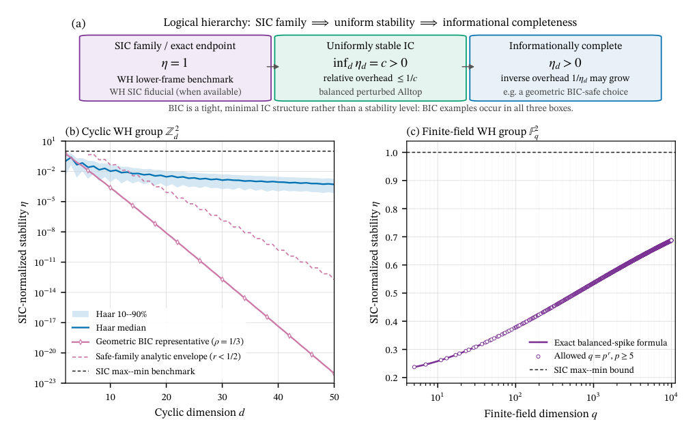
<figcaption class="paper-figure-caption"><b>Fig 1.</b> FIG. 1. Spectral stability beyond binary informational completeness; larger η is better. (a) A SIC is the exact η = 1 endpoint, uniform stability is a dimension-independent relative guarantee, and ordinary IC says only that the inverse exists, so conditioning may degrade. BIC is a tight minimal-IC structure, not a stability level. (b) Cyclic Z2 d benchmarks: blue shows the median and 10–90% range of 2000 Haar fiducials per dimension; pink shows the geometric representative α = (1/3)e2πitd from the explicit sufficient IC region, with td = 0 for odd d and td = 1/(4d) for even d. Its analytic upper envelope decays exponentially but does not bound all BICs. (c) Exact balanced-Alltop stability...</figcaption>
</figure>
<figure class="paper-figure-card">

<figcaption class="paper-figure-caption"><b>Fig 2.</b> FIG. 2. Exact Hilbert–Schmidt MSE ratio R for canonical linear inversion at I/q in prime dimensions. The WH-SIC benchmark is R = 1, and larger R means larger error. Purple circles show balanced Alltop, blue the median and 10–90% range over 4000 Haar fiducials, and pink diamonds the geo- metric representative α = 1/3 from the explicit sufficient IC region (all plotted dimensions are odd). Ratios are evaluated analytically from the nonidentity projector-Gram spectrum and are independent of N; no measurement-shot Monte Carlo is used. For prime q, cyclic and finite-field WH phase spaces coincide.</figcaption>
</figure>
<figure class="paper-figure-card">
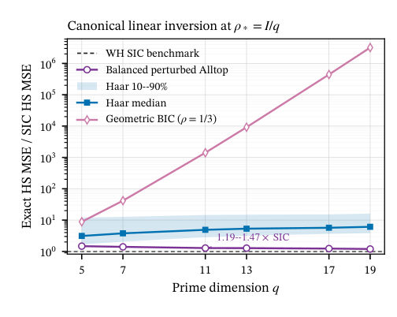
<figcaption class="paper-figure-caption"><b>Fig 3.</b> Figure 2 uses the WH-SIC value R = 1 as its benchmark. Across the displayed primes, the balanced-Alltop ratio decreases from 1.474 to 1.194, whereas the Haar median rises from 3.117 to 6.108 and the geometric representa- tive grows from 8.828 to 3.20 × 106. Thus informational completeness alone does not control this canonical finite- sample linear-inversion MSE, even for the fixed maximally mixed input.</figcaption>
</figure>
</div>

<p><strong>Summary.</strong> This theoretical paper rigorously analyzes the spectral stability of Weyl--Heisenberg measurements relative to the ideal SIC benchmark. By developing explicit constructions in various dimensions (cyclic, finite-field), the authors derive quantitative lower bounds on the minimum eigenvalue ($\lambda$) and show that these measurements approach optimal performance asymptotically without requiring the existence of a true SIC state.</p>
<p><strong>Why it may be interesting.</strong> This work provides rigorous, constructive methods to quantify measurement performance metrics like local Fisher efficiency and canonical error bounds, which are crucial for designing optimal quantum state tomography protocols.</p>
<details>
<summary>Detailed structure</summary>
<p><strong>Main problem.</strong> The paper aims to quantify the spectral stability of minimal Weyl--Heisenberg (WH) measurements, determining how closely they can approach the ideal Symmetric Informationally Complete (SIC) benchmark without assuming SIC existence.</p>
<p><strong>Main result.</strong> The authors construct a hierarchy of minimal measurements showing that for prime-power dimensions $p \ge 5$, perturbations of cubic Alltop states yield spectra confined to $[L_q, U_q]$ with the ratio $U_q/L_q$ approaching 1, and $\lambda(\phi_q)/\Lambda^\star_q 	o 1$.</p>
<p><strong>Method.</strong> The analysis heavily relies on spectral theory applied to the projector-Gram matrix derived from WH measurements, utilizing Fourier transforms, max-min optimization, and specialized algebraic techniques for cyclic and finite-field correlations.</p>
<p><strong>Model / system.</strong> The system under study is quantum measurement theory using minimal rank-one Weyl--Heisenberg (WH) measurements in a $d$-dimensional Hilbert space. The quality of the measurement is diagnosed via the spectrum of the Projector Gram matrix, $ ext{Spec}(G_\Pi^\phi)$.</p>
<p><strong>Key observables.</strong> Smallest nonidentity eigenvalue ($\lambda(\phi)$), spectral stability measure ($\eta(\phi)$), and the canonical Mean-Squared Error ratio ($R(\phi)$).</p>
<p><strong>Important parameters / regimes.</strong> Dimension $d$, prime power dimension $q=p^k$ with characteristic $p \ge 5$, and the SIC benchmark value.</p>
<p><strong>Assumptions / limitations.</strong> The analysis often proceeds by assuming specific algebraic structures (e.g., cyclic or finite-field settings) to derive bounds, though it aims to provide results without assuming exact SIC existence.</p>
<p><strong>Figures summary.</strong> Figures compare spectral stability ($\eta$) across different dimensions and plot the exact MSE ratio ($R$) for canonical linear inversion against the WH-SIC benchmark ($R=1$).</p>
<p><strong>Paper structure.</strong> The paper establishes the relationship between IC, uniform stability, and the SIC endpoint using the projector-Gram matrix spectrum. It then develops specific constructions (cyclic, finite-field) to derive quantitative bounds on $\lambda(\phi)$ and $\eta(\phi)$, culminating in results for prime-power dimensions.</p>
</details>
<details>
<summary>Abstract</summary>
<p>Informational completeness (IC) guarantees that an inverse exists, not that it is statistically well conditioned. For minimal rank-one Weyl--Heisenberg (WH) measurements, covariance makes the nonidentity projector-Gram spectrum proportional to the fiducial's ambiguity intensities, with eigenvalues \(d|χ_φ(u)|^2\), turning stability into an explicit worst-direction design problem; write \(λ\) for its smallest nonidentity eigenvalue. Haar fiducials are IC almost surely while \(\mathbb E[λ^{-1}]=\infty\), and an explicit geometric family used to establish balanced informationally complete measurements in every dimension has a normalized spectral floor bounded above by an exponentially decaying envelope. We then construct a hierarchy of minimal measurements. A cyclic family with exactly \(d^2\) outcomes in every integer dimension has floors \(Θ(d^{-3})\) for odd \(d\) and \(Θ(d^{-5})\) for even \(d\); a finite-field family for \(q=2^m\) obeys the uniform bound \(λ\ge4/9\). Our main result treats every prime-power dimension of characteristic \(p\ge5\). A balanced one-coordinate perturbation repairs the zero ambiguity axis of a cubic Alltop state, gives an attained floor uniformly bounded below by a positive constant, and confines the entire nonidentity spectrum to \([L_q,U_q]\) with \(U_q/L_q\to1\). Its SIC-normalized minimum tends to one, and \(λ(φ_q)/Λ_q^\star\to1\) for the global finite-field WH max--min optimum \(Λ_q^\star\), without assuming SIC existence. The complete spectrum determines the exact finite-sample Hilbert--Schmidt error of canonical linear inversion at \(I/d\), while its lower edge controls local Fisher efficiency and canonical-shadow bounds.</p>
</details>
<p><sub><a href="#top">↑ back to top</a></sub></p>

<p><a id="paper-2608.12213"></a></p>
<h3 id="parity-mapping-for-quantum-optimization-on-frustrated-ising-rings"><a href="http://arxiv.org/abs/2608.12213v1">Parity Mapping for Quantum Optimization on Frustrated Ising Rings</a></h3>
<p><strong>Authors:</strong> Ruiyi Wang, Anita Weidinger, Glen Bigan Mbeng, Wolfgang Lechner, Giuseppe E. Santoro<br>
<strong>Type:</strong> theory · <strong>Category:</strong> quantum information and computing · <strong>PDF:</strong> <a href="https://arxiv.org/pdf/2608.12213v1">https://arxiv.org/pdf/2608.12213v1</a><br>
<strong>Analysis basis:</strong> full PDF text, analyzed in chunks
<strong>Topic relevance:</strong> 🔥 <code>analog quantum simulation</code> <strong>4/5</strong></p>
<div class="figure-strip-hint">↔ Scroll figures horizontally</div>
<div class="paper-figures-scroll">
<figure class="paper-figure-card">
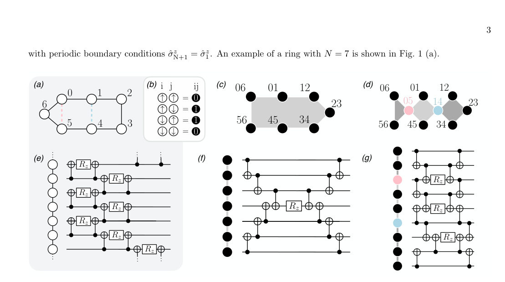
<figcaption class="paper-figure-caption"><b>Fig 1.</b> FIG. 1: The Ising ring with N = 7 in its logical representation (a) and parity representations (c)–(d). The parity transformation table is given in (b). Without ancillas the parity graph has an N-body constraint visualized by a grey polygon in (c). With ancilla interactions (red and blue dashed lines in (a)) the parity graph has three constraints of size three or four, shown in (d). The digital implementations of the multi-qubit gates are shown in (e), (f) and (g) for the logical graph, parity graph and the parity graph with ancillas, respectively.</figcaption>
</figure>
<figure class="paper-figure-card">
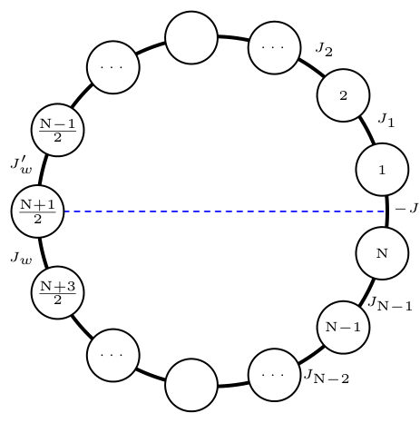
<figcaption class="paper-figure-caption"><b>Fig 2.</b> FIG. 2: The frustrated Ising ring with N spins. The antiferromagnetic bond −Jf sits at site j = N; the two weak bonds Jw and J′ w flank the central spin at j = (N + 1)/2, with J′ w = Jw in the standard symmetric case. All remaining bonds equal J in the standard model and may take distinct values in the modified instances (see text). The dashed blue line indicates the possible reflection symmetry axis.</figcaption>
</figure>
<figure class="paper-figure-card">
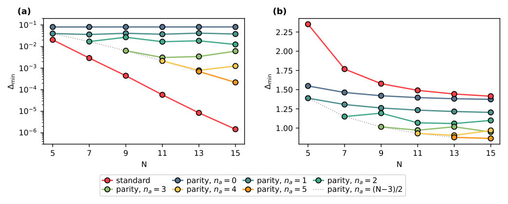
<figcaption class="paper-figure-caption"><b>Fig 3.</b> FIG. 3: Minimal energy gap ∆min versus system size N in the standard and parity implementations, for (a) the frustrated ring model (constraint strength C = J; note the logarithmic scale) and (b) the ring with uniform coupling magnitudes and a single antiferromagnetic bond (constraint strength C = 2J; linear scale). In both panels, solid coloured lines show the parity gap at fixed ancilla number na = 0, 1, . . . , 5, each starting at the smallest admissible ring N = 2na + 3; the grey dotted line is the realistic parity gap at the hardware-required na = (N −3)/2. In (a), the standard and realistic-parity gaps close as ∼e−0.96 N and ∼e−0.51 N, so the parity mapping roughly halves the decay...</figcaption>
</figure>
<figure class="paper-figure-card">
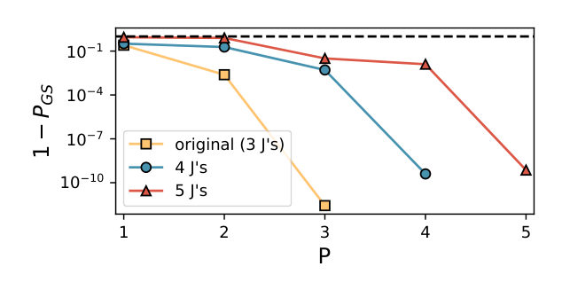
<figcaption class="paper-figure-caption"><b>Fig 4.</b> FIG. 4: Ground state infidelity 1 −PGS vs circuit depth P (only single qubit z- and x-rotations) for the original formulation of the frustrated ring model and its adaptations for N = 7. The greater the number of distinct Jj values, the more layers P are needed to reach the ground state.</figcaption>
</figure>
<figure class="paper-figure-card">
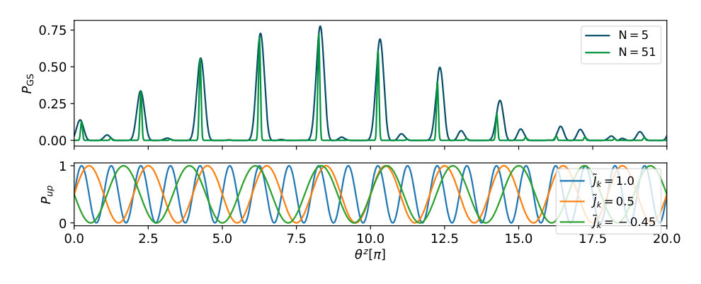
<figcaption class="paper-figure-caption"><b>Fig 5.</b> FIG. 5: The probability of being in the exact ground state PGS (upper plot) and the probability of a single physical qubit being in the up state P↑(lower plot) as a function of the single control parameter θz at fixed θx = π/4 (a single QAOA layer, P = 1). In the upper plot we show comparisons between N = 5 and N = 51. In the lower plot we show comparisons of qubits associated with different parameters ˜Jk = 1.0, 0.5 and −0.45.</figcaption>
</figure>
</div>

<p><strong>Summary.</strong> This work analyzes the use of parity mapping to enhance quantum optimization on frustrated Ising rings. By applying this technique, the authors demonstrate significant theoretical improvements for both Quantum Annealing and QAOA protocols compared to standard methods. This suggests that constraint encoding via parity qubits can lead to more robust and scalable quantum computation algorithms.</p>
<p><strong>Why it may be interesting.</strong> It provides a concrete algorithmic improvement for quantum computation by showing how mapping constraints can stabilize spectral gaps and reduce scaling in variational quantum algorithms applied to physically relevant models like frustrated magnets.</p>
<details>
<summary>Detailed structure</summary>
<p><strong>Main problem.</strong> The paper investigates how applying a 'parity mapping' technique affects the performance of quantum optimization algorithms (QA and QAOA) when solving problems on frustrated Ising rings.</p>
<p><strong>Main result.</strong> Parity mapping improves both continuous-time Quantum Annealing by increasing spectral gaps and discrete QAOA by achieving constant layer scaling, outperforming conventional methods in complexity metrics.</p>
<p><strong>Method.</strong> The authors analyze the performance of two quantum optimization protocols—Quantum Annealing (QA) and QAOA—on a frustrated Ising ring using theoretical analysis and state-vector simulations.</p>
<p><strong>Model / system.</strong> The system is the frustrated Ising ring, modeled by a target Hamiltonian $\hat{H}_{\text{target}}$. The core technique involves mapping local interactions to parity qubits via Parity Mapping, which introduces constraint Hamiltonians ($\tilde{H}_c$) into the overall problem formulation.</p>
<p><strong>Key observables.</strong> Minimum spectral gap (for QA), number of required QAOA layers, and circuit complexity metrics like CNOT depth.</p>
<p><strong>Important parameters / regimes.</strong> The coupling strengths ($J_j$), constraint strength ($C$), and the annealing schedule parameter ($s(t)$).</p>
<p><strong>Assumptions / limitations.</strong> The analysis compares ideal Parity-QA vs. hardware-motivated decompositions, and assumes that single-qubit rotations are sufficient for ground state preparation in certain regimes.</p>
<p><strong>Figures summary.</strong> Figure 1 illustrates the Ising ring structure in both logical and parity qubit representations, detailing the required multi-qubit gate transformations.</p>
<p><strong>Paper structure.</strong> The paper introduces the frustrated Ising ring model, details the Parity Mapping technique to transform the Hamiltonian, and then analyzes its impact separately on continuous-time Quantum Annealing (QA) and the discrete QAOA protocol, concluding with complexity comparisons.</p>
</details>
<details>
<summary>Abstract</summary>
<p>The frustrated Ising ring is one of the simplest models exhibiting exponential closing spectral gaps, making it a paradigmatic and challenging benchmark for quantum annealing (QA). Ground-state preparation for this model has therefore been studied extensively in both continuous-time QA and digitized protocols such as the Quantum Approximate Optimization Algorithm (QAOA). Here, we use the frustrated Ising ring to investigate how the parity mapping affects the performance of both QA and QAOA. For QA, finite-size calculations show that the parity mapping increases the minimum spectral gap under the energy normalization used in this work, thereby enabling faster continuous-time ground state preparation protocols. An ideal implementation of Parity-QA, with a single global constraint, shows no evidence of exponential gap closing over the accessible system sizes, whereas a hardware-motivated decomposition into local constraints restores the exponential decrease, albeit with a smaller fitted exponent than conventional QA. For the digitized protocol, we find that the number of Parity-QAOA layers required to prepare the exact ground state remains constant over the simulated sizes, improving upon the quadratic scaling required by conventional QAOA. To investigate the role of constraints in Parity-QAOA, we further consider a modified Ising ring instance in which the constraint term is essential for preparing the target ground state. We then compare the corresponding resource requirements with those of conventional QAOA.</p>
</details>
<p><sub><a href="#top">↑ back to top</a></sub></p>

<p><a id="paper-2608.11301"></a></p>
<h3 id="quetzalcoatlite-as-a-disorder-free-platform-for-chiral-magnetism-and-frustration"><a href="http://arxiv.org/abs/2608.11301v1">Quetzalcoatlite as a Disorder-Free Platform for Chiral Magnetism and Frustration</a></h3>
<p><strong>Authors:</strong> Aleksandar Razpopov, P. Peter Stavropoulos, Michael R. Norman, Roser Valentí<br>
<strong>Type:</strong> theory · <strong>Category:</strong> strongly correlated electrons · <strong>PDF:</strong> <a href="https://arxiv.org/pdf/2608.11301v1">https://arxiv.org/pdf/2608.11301v1</a><br>
<strong>Analysis basis:</strong> full PDF text, analyzed in chunks
<strong>Topic relevance:</strong> 🔥 <code>analog quantum simulation</code> <strong>4/5</strong></p>
<div class="figure-strip-hint">↔ Scroll figures horizontally</div>
<div class="paper-figures-scroll">
<figure class="paper-figure-card">
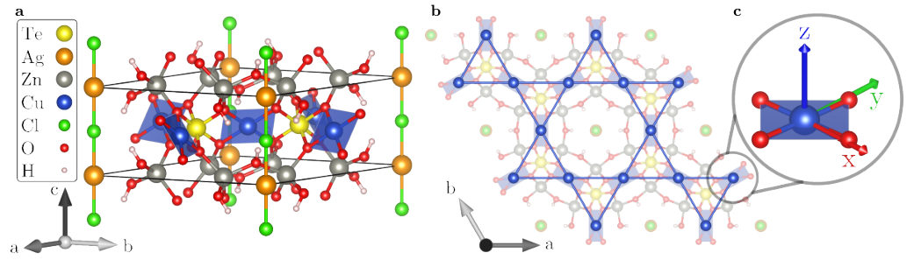
<figcaption class="paper-figure-caption"><b>Fig 1.</b> Fig. 1 Crystal structure of quetzalcoatlite. The idealized stoichiometry structure (x = 1 and y = 0 in Zn6Cu3(TeO6)2(OH)6 · (Agx PbyClx+2y)) is shown. a Side view of the primitive unit cell. b Top-down view, with the characteristic kagome lattice formed by the magnetic Cu2+ sites, decorated by O and OH– ligands. c Closeup view of the local Cu environment, with the local axis z perpendicular to the ligand plane, and xy mostly aligned with the oxygens. The crystal structure was visualized using VESTA [38].</figcaption>
</figure>
<figure class="paper-figure-card">
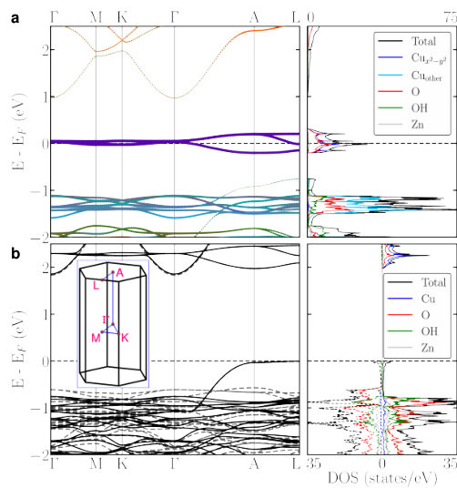
<figcaption class="paper-figure-caption"><b>Fig 2.</b> Fig. 2 Electronic structure of quetzalcoatlite. a Band struc- ture and atom resolved DOS at the GGA level. The superimposed fat bands indicate the respective contributions in the bands. The Cu DOS is given in the local coordinates as defined in Fig. 1c, and additionally resolved in the local x2 −y2 contributions. b Band structure and DOS calculated within the GGA+U framework with Ueff = 6 eV, assuming a polarized FM configuration. Solid and dashed lines represent the spin-up and spin-down channels, respec- tively. The negligible Cl and Ag contribution, in this energy win- dow, are not visible.</figcaption>
</figure>
<figure class="paper-figure-card">
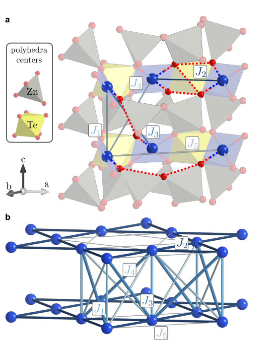
<figcaption class="paper-figure-caption"><b>Fig 3.</b> Fig. 3 Exchange microscopic paths and network a Cut out of the crystal enviroment, highlighting the superexchange paths for J1 to J5. The contributing Cu and O sites are highlighted. b The copper magnetic exchange network up to J5, color coded from strongest coupling (dark blue) to weakest (light blue). The crystal structure was visualized using VESTA [38]</figcaption>
</figure>
<figure class="paper-figure-card">
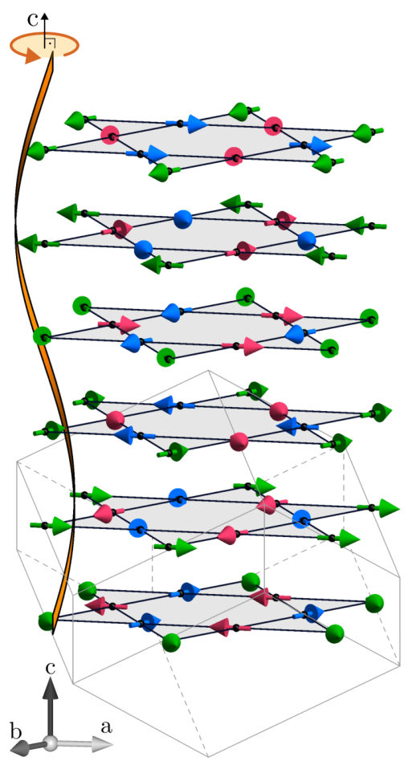
<figcaption class="paper-figure-caption"><b>Fig 4.</b> Fig. 4 Magnetic unit cell orderer. Classical ⃗Q = (−2/3, −2/3, −1/6) state in real space. Each kagome layer forms a √</figcaption>
</figure>
<figure class="paper-figure-card">
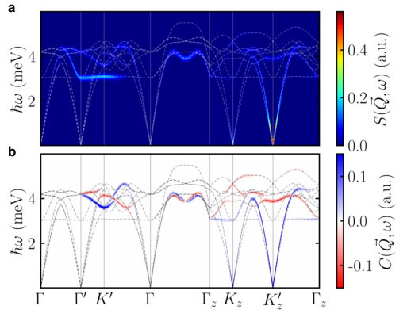
<figcaption class="paper-figure-caption"><b>Fig 5.</b> Fig. 6 Magnon bands and dynamical factors. Magnon ex- citation spectrum and dynamical chirality estimated via LSWT. The momentum path follows the high-symmetry points defined in Fig. 5, with Γ′ = (0, 1, 0), K′ = (−2/3, 4/3, 0), Γz = (0, 0, qz), Kz = (1/3, 1/3, qz), and K′ z = (−2/3, 4/3, qz). a The magnon intensity strongly peaks at the primary magnetic ordering vectors ⃗Q1 = K′ z and ⃗Q2 = Kz, in agreement with the classical structure factor. b Dynamical chirality signature, reflecting the right-handed spiral of the underlying magnetic ground state. The plots include Gaussian broadening of 0.1 meV. Note that the chirality operator changes sign in between Γ and Γz, following the description...</figcaption>
</figure>
</div>

<p><strong>Summary.</strong> This theoretical study analyzes quetzalcoatlite, an ideal kagome magnet, to understand its magnetic ground state. By mapping the electronic structure onto an effective Heisenberg model, the authors show that competing intra- and interlayer exchange interactions stabilize a unique, intrinsic three-dimensional chiral spin order. This work highlights how structural geometry dictates complex quantum magnetic behavior.</p>
<p><strong>Why it may be interesting.</strong> The explicit derivation of chirality from competing geometric interactions in a lattice model is highly relevant for understanding frustrated magnetism and emergent order parameters in quantum materials.</p>
<details>
<summary>Detailed structure</summary>
<p><strong>Main problem.</strong> The study investigates how geometric frustration, chirality, and interlayer coupling dictate the magnetic ground state of the mineral quetzalcoatlite.</p>
<p><strong>Main result.</strong> The competition between nearest-neighbor intralayer and next-nearest-neighbor interlayer couplings stabilizes an intrinsic three-dimensional chiral magnetic order characterized by a $60^\circ$ spin rotation between adjacent layers.</p>
<p><strong>Method.</strong> The authors employed ab initio calculations (DFT+U) to derive effective Heisenberg exchange interactions, which were then used to minimize the classical magnetic Hamiltonian.</p>
<p><strong>Model / system.</strong> The system is modeled as an ideal kagome magnet structure within quetzalcoatlite. The low-energy physics is mapped onto a generalized Heisenberg model incorporating multiple competing exchange couplings ($J_\alpha$) up to the 5th nearest neighbor.</p>
<p><strong>Key observables.</strong> Chiral magnetic order, propagation vector Q, static and dynamic spin structure factors, and electronic band gap.</p>
<p><strong>Important parameters / regimes.</strong> The relative strengths of the intralayer vs. interlayer exchange couplings ($J_2$ vs $J_3$), which determine the transition between different ordered states.</p>
<p><strong>Assumptions / limitations.</strong> The study assumes an idealized stoichiometry for simplification and uses DFT+U to treat strong electronic correlations, which opens a gap in the insulating state.</p>
<p><strong>Figures summary.</strong> Figures illustrate the crystal structure showing the kagome lattice; one figure shows the opening of the electronic band gap upon including correlation effects (GGA vs GGA+U); others map out the resulting $\sqrt{3} 	imes \sqrt{3}$ coplanar magnetic order with layer-to-layer $60^\circ$ rotation.</p>
<p><strong>Paper structure.</strong> The paper first establishes the material as a suitable platform, then uses DFT+U to calculate exchange couplings ($J_\alpha$). Finally, it analyzes the resulting effective Heisenberg model by minimizing the energy and analyzing the magnetic structure factors to determine the chiral ground state.</p>
</details>
<details>
<summary>Abstract</summary>
<p>The natural mineral quetzalcoatlite Zn$_6$Cu$_3$(TeO$_6$)$_2$(OH)$_6$ $\cdot$ (Ag$_x$Pb$_y$Cl$_{x+2y}$) is a structurally ideal kagome magnet, providing a platform for exploring the interplay of geometric frustration, chirality, and tunability in a disorder-free framework. Here, we present the (first) comprehensive ab initio study of its electronic and magnetic properties. The electronic structure is dominated by localized half-filled Cu $d_{x^2-y^2}$ orbitals that become insulating through electronic correlations. Mapping the low-energy physics onto a Heisenberg model reveals that the magnetism is governed primarily by two exchange interactions: a nearest-neighbor intralayer kagome coupling and a next-nearest-neighbor interlayer coupling. Their competition stabilizes an unconventional three-dimensional chiral magnetic state. Each kagome layer hosts a $\sqrt{3}\times\sqrt{3}$ order, while adjacent layers are rotated by $60^\circ$, producing a right-handed spiral along the crystallographic $c$-axis. This intrinsic chiral order emerges naturally from the crystal structure and magnetic interactions, establishing quetzalcoatlite as a distinctive realization of chiral magnetism on a perfect kagome lattice. At the same time, the small energy scale of the exchange interactions places the material close to competing magnetic regimes, suggesting that moderate pressure, chemical substitution, or structural modifications may strongly enhance frustration, suppress long-range order, and potentially drive the system toward a quantum spin-liquid state.</p>
</details>
<p><sub><a href="#top">↑ back to top</a></sub></p>

<p><a id="paper-2608.11310"></a></p>
<h3 id="spin-coherent-quantum-designs"><a href="http://arxiv.org/abs/2608.11310v1">Spin-coherent quantum designs</a></h3>
<p><strong>Authors:</strong> Marcin Rudziński, Aaron Z. Goldberg, Andrei B. Klimov, Luis L. Sánchez-Soto, Karol Życzkowski<br>
<strong>Type:</strong> theory · <strong>Category:</strong> other · <strong>PDF:</strong> <a href="https://arxiv.org/pdf/2608.11310v1">https://arxiv.org/pdf/2608.11310v1</a><br>
<strong>Analysis basis:</strong> full PDF text, analyzed in chunks
<strong>Topic relevance:</strong> 🔥 <code>quantum measurements</code> <strong>4/5</strong></p>
<div class="figure-strip-hint">↔ Scroll figures horizontally</div>
<div class="paper-figures-scroll">
<figure class="paper-figure-card">
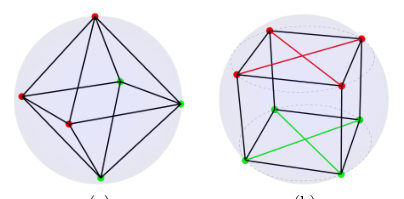
<figcaption class="paper-figure-caption"><b>Fig 1.</b> Figure 2. Examples of azimuthal freedom in coherent-state identity resolutions. Identity 11d resolution is invariant under a collective rotation of k equally distributed points on a circle around the circle axis, provided k ≥d. The colored points indicate rigid blocks that can be rotated without changing the identity resolution in the corresponding spin dimension. a) an octahedron–identity resolution of dimensions d = 2, 3 invariant under collective rotation of points of the same color, b) a cube–invariant decomposition for d = 2, 3, 4, c) a cube–invariant decomposition for d = 2, d) a regular tetrahedron–it gives resolution of identity for d = 2, 3 and it is a specific case of c) with...</figcaption>
</figure>
<figure class="paper-figure-card">
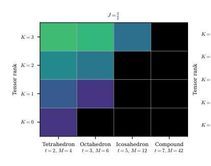
<figcaption class="paper-figure-caption"><b>Fig 2.</b> Figure 3. Hilbert–Schmidt reconstruction error for irreducible spin-tensor operators using a coherent-state decomposition generated by analytical spherical designs given by chosen Platonic solids66 and a compound of seven octahedra.67 For each spin J, tensor rank K, and design, the maximal Hilbert–Schmidt distance between spin-tensor T (J) Kq and its reconstruction via coherent design is plotted. Black cells denote analytically exact reconstruction.</figcaption>
</figure>
</div>

<p><strong>Summary.</strong> This paper establishes that reconstructing an operator of rank $S$ in a spin system requires the measurement sampling points to form a spherical $(2J+S)$-design. It provides explicit constructions and protocols, offering a powerful mathematical tool to guide the design of optimal, minimal-sample measurements for quantum systems like magnetometers.</p>
<p><strong>Why it may be interesting.</strong> This work directly impacts quantum measurement theory by providing rigorous, mathematically necessary conditions (spherical designs) for achieving high-fidelity state or observable readouts using minimal measurements, which is crucial for experimental quantum sensing.</p>
<details>
<summary>Detailed structure</summary>
<p><strong>Main problem.</strong> The core problem is determining the minimal discrete set of measurement points (coherent states) required to exactly reconstruct an arbitrary quantum operator within a specific rank sector ($S$) for spin systems.</p>
<p><strong>Main result.</strong> Exact reconstruction is mathematically equivalent to the sampling points forming a spherical $(2J+S)$-design, providing a unified framework for reading out physical observables from limited measurements.</p>
<p><strong>Method.</strong> The authors use techniques involving multipole expansions and comparing discrete sums over design points against continuous integral representations of quantum operators.</p>
<p><strong>Model / system.</strong> The system is based on spin-$J$ angular momentum systems ($ ext{SU}(2)$), whose phase space is modeled by the sphere $S^2$. Operators are analyzed via their decomposition into irreducible tensor sectors ($V_S$).</p>
<p><strong>Key observables.</strong> Spin moments ($\langle J_q 
angle$), second moment contravariant symbol ($I^{ab}$), and the expectation values of operators in specific rank sectors.</p>
<p><strong>Important parameters / regimes.</strong> The spin quantum number $J$, the target operator rank $S$, and the required design strength $t = 2J+S$.</p>
<p><strong>Assumptions / limitations.</strong> The analysis is specialized for $    ext{SU}(2)$ systems, focusing on reconstructing specific tensor sectors rather than the entire Hilbert space.</p>
<p><strong>Figures summary.</strong> Figures illustrate the scaling of known spherical designs ($M$ vs $t$) and confirm that exact reconstruction (black cells) occurs when the design strength $t$ meets or exceeds $2J+S$.</p>
<p><strong>Paper structure.</strong> The paper establishes the mathematical equivalence between exact operator reconstruction and the existence of a specific type of spherical design, provides explicit constructions (Gauss-Legendre), and concludes with practical protocols for moment estimation.</p>
</details>
<details>
<summary>Abstract</summary>
<p>Coherent states bridge the gap between quantum and classical physics, but their overcomplete and nonorthogonal nature makes it difficult to identify the minimal discrete set needed to reconstruct quantum information. Finite spin-coherent tomography and discrete coherent-state operator bases are known, but here we address the more specific rank-resolved problem of preserving the canonical contravariant-symbol representation. We show that the canonical finite coherent-state formula reconstructs every operator in the rank-$S$ sector exactly if and only if the sampling points form a spherical $(2J+S)$-design. We call the associated configurations spin-coherent quantum designs. We further give a fully explicit positive-weight Gauss-Legendre construction that avoids the need for an equal-weight spherical design. Together, these results establish a unified framework for reading out physical observables from a handful of measurement samples, playing for spin systems the role that the so-called von Neumann lattice plays for canonical coherent states. Finally, we derive practical protocols for estimating moments of spin operators from these constructions, with direct applications to polarimetry, magnetometry, and quantum state tomography.</p>
</details>
<p><sub><a href="#top">↑ back to top</a></sub></p>

<p><a id="paper-2608.12081"></a></p>
<h3 id="design-of-monolithic-microcavities-for-enhancing-organic-quantum-emitters"><a href="http://arxiv.org/abs/2608.12081v1">Design of monolithic microcavities for enhancing organic quantum emitters</a></h3>
<p><strong>Authors:</strong> Tim Hebenstreit, Jaime Gimeno Balaguer, Fridtjof Betz, Felix Binkowski, Maja Colautti, Jan Renger, Costanza Toninelli, Sven Burger, Stephan Götzinger<br>
<strong>Type:</strong> theory · <strong>Category:</strong> other · <strong>PDF:</strong> <a href="https://arxiv.org/pdf/2608.12081v1">https://arxiv.org/pdf/2608.12081v1</a><br>
<strong>Analysis basis:</strong> full PDF text, analyzed in chunks
<strong>Topic relevance:</strong> <code>analog quantum simulation</code> <strong>3/5</strong> · <code>interference shaping light</code> <strong>3/5</strong> · <code>Tavis-Cummings &amp; cavity-many-emitter</code> <strong>2/5</strong> · <code>driven-dissipative phase transition</code> <strong>2/5</strong> · <code>methods for driven-dissipative</code> <strong>2/5</strong> · <code>Keldysh / 2PI / non-Gaussian methods</code> <strong>1/5</strong> · <code>correlated / nonlocal dissipation</code> <strong>1/5</strong> · <code>quantum measurements</code> <strong>1/5</strong> · <code>superradiant laser</code> <strong>1/5</strong></p>
<div class="figure-strip-hint">↔ Scroll figures horizontally</div>
<div class="paper-figures-scroll">
<figure class="paper-figure-card">
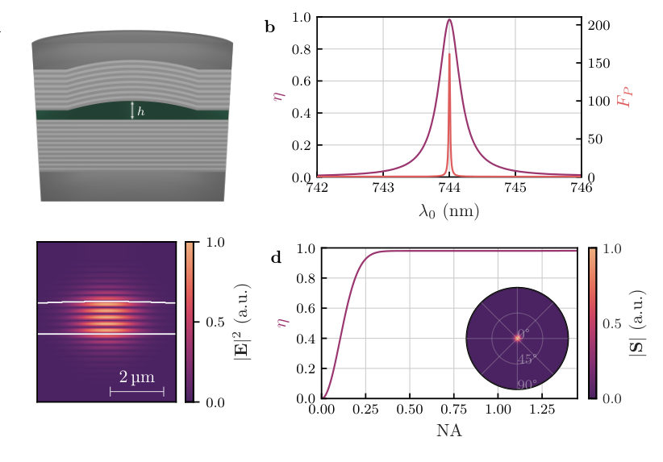
<figcaption class="paper-figure-caption"><b>Fig 1.</b> Figure 1: Monolithic DBR-based Fabry–Perot cavity for DBT:p-DCB. a Schematic cross-section with planar bottom DBR and concave top DBR (R = 50 µm). b Simulated resonant Purcell enhancement (FP ≈160, ≈0.02 nm bandwidth) and collection η ≈98 % into NA = 0.75. c Normalized field intensity showing h ≈5</figcaption>
</figure>
<figure class="paper-figure-card">
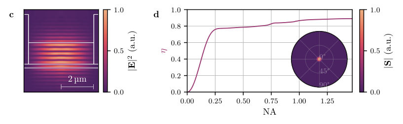
<figcaption class="paper-figure-caption"><b>Fig 2.</b> Figure 2: DBR-based micropillar cavity for DBT:Ac nanocrystals. a Cross-section and design parameters of the structure. b Simulated Purcell enhancement and collection efficiency into NA = 0.75. c Normalized field intensity of the dominant eigenmode with Veff ≈34(λ0/n)3 and Q ≈10200. d The collection efficiency as a function of the numerical aperture. The inset shows the energy radiated to the far-field.</figcaption>
</figure>
<figure class="paper-figure-card">
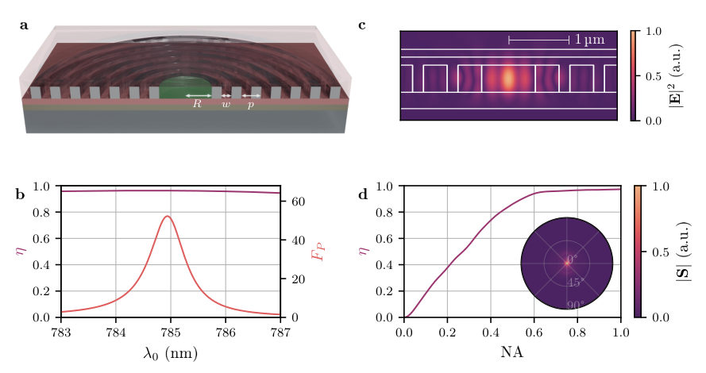
<figcaption class="paper-figure-caption"><b>Fig 3.</b> Figure 3: Circular Bragg grating cavity for nanoprinted DBT:Ac. a CBG cross-section and design parameters. b Simulated Purcell enhancement FP ≈52 (bandwidth ≈1 nm) and free-space collection efficiency η ≈96 % into NA = 0.75. c Normalized field intensity with Veff ≈1.3  λ0</figcaption>
</figure>
</div>

<p><strong>Summary.</strong> The paper tackles the challenge of improving single-photon purity from organic molecules by designing monolithic microcavities. Using advanced theoretical modeling and optimization, they propose specific Fabry–Perot and CBG designs that maximize Purcell enhancement into the desired zero-phonon line. This provides a crucial pathway for realizing practical, high-quality quantum light sources.</p>
<p><strong>Why it may be interesting.</strong> This work directly addresses quantum light sources, a core topic in AMO physics and quantum optics. The detailed coupling of molecular emission properties with engineered cavity QED effects is highly relevant for building practical quantum hardware.</p>
<details>
<summary>Detailed structure</summary>
<p><strong>Main problem.</strong> Single organic molecules are promising single-photon sources but suffer from unwanted phonon sideband emission, reducing the desired zero-phonon line (0-0 ZPL) purity.</p>
<p><strong>Main result.</strong> The authors propose and analyze three monolithic microcavity designs that can significantly enhance Purcell enhancement into the 0-0 ZPL, offering a clear route to high-quality monochromatic single-photon sources.</p>
<p><strong>Method.</strong> The study uses theoretical modeling, including finite-element method (FEM) simulations and analytical approximations for various cavity types (Fabry–Perot, CBG), coupled with Bayesian optimization techniques.</p>
<p><strong>Model / system.</strong> The system involves embedding organic quantum emitters within monolithic photonic nanostructures like Fabry–Perot or Circular Bragg Grating (CBG) microcavities. These structures are designed to engineer the local photonic density of states.</p>
<p><strong>Key observables.</strong> Purcell Enhancement ($F_P$), Spectral Redistribution Factor ($\alpha'$), Overall Collection Efficiency ($\eta_{	ext{ZPL}}$), and cavity quality factor ($Q$).</p>
<p><strong>Important parameters / regimes.</strong> Cavity dimensions (e.g., spacer thickness $h_{	ext{SiO2}}$, disk radius $R_{	ext{disk}}$), emitter wavelength ($\lambda_0$), and coupling parameters.</p>
<p><strong>Assumptions / limitations.</strong> The analysis assumes that single molecules can be positioned at the electric field maximum of the engineered cavity mode, which is a major technological hurdle.</p>
<p><strong>Figures summary.</strong> Figures illustrate theoretical field profiles (Gaussian/Bessel-like), far-field intensity patterns showing Gaussian divergence, and parameter dependency sweeps mapping optimal ranges for various structural dimensions to maximize $F_P$ and $\eta$.</p>
<p><strong>Paper structure.</strong> The paper develops an analytical framework by analyzing different cavity geometries (Fabry–Perot vs. CBG) using Gaussian beam optics and Bloch wave vector analysis. It then applies optimization techniques (Bayesian optimization) to determine optimal structural parameters that maximize the desired photon collection efficiency.</p>
</details>
<details>
<summary>Abstract</summary>
<p>Single organic molecules are a well-established platform for high-quality single-photon generation: they can emit lifetime-limited photons with high purity and indistinguishability. However, their emission is accompanied by a pronounced red-shifted phonon sideband and higher-order vibrational peaks, which reduce the fraction of photons emitted into the desired narrowband zero-phonon line. The standard approach to suppressing this unwanted emission is to integrate the emitter into a monolithic photonic nanostructure that provides Purcell enhancement. However, incorporating organic materials using clean-room techniques has proven challenging, and has in fact so far prevented their integration into monolithic microcavities altogether. As a result, efficient, narrowband organic single-photon sources for applications in quantum information processing have remained elusive despite their considerable promise. Here, we propose three monolithic microcavity designs tailored to provide sufficient Purcell enhancement for organic quantum emitters. The Purcell effect induced by these cavities preferentially enhances emission into the 0-0 zero-phonon line, increasing spectral purity, photon extraction, and shortening the excited-state lifetime, which in turn relaxes the requirements for generating indistinguishable photons. The cavities have been optimized using Bayesian optimization and the adaptive Antoulas-Anderson (AAA) algorithm for rational approximation, which offer global optimization and the efficient reconstruction of spectra from scattering simulations, respectively. These structures are compatible with both standard clean-room processing and single-molecule preparation techniques. Therefore, they offer a clear route to realize high-quality, practically monochromatic organic single-photon light sources.</p>
</details>
<p><sub><a href="#top">↑ back to top</a></sub></p>

<p><a id="paper-2608.12208"></a></p>
<h3 id="dynamics-of-fluctuating-populations-in-multi-state-switching-environments"><a href="http://arxiv.org/abs/2608.12208v1">Dynamics of fluctuating populations in multi-state switching environments</a></h3>
<p><strong>Authors:</strong> Mauro Mobilia<br>
<strong>Type:</strong> theory · <strong>Category:</strong> statistical mechanics · <strong>PDF:</strong> <a href="https://arxiv.org/pdf/2608.12208v1">https://arxiv.org/pdf/2608.12208v1</a><br>
<strong>Analysis basis:</strong> full PDF text, analyzed in chunks
<strong>Topic relevance:</strong> <code>analog quantum simulation</code> <strong>3/5</strong> · <code>driven-dissipative phase transition</code> <strong>3/5</strong> · <code>methods for driven-dissipative</code> <strong>3/5</strong> · <code>Keldysh / 2PI / non-Gaussian methods</code> <strong>2/5</strong> · <code>non-equilibrium universality</code> <strong>2/5</strong> · <code>correlated / nonlocal dissipation</code> <strong>1/5</strong> · <code>quantum measurements</code> <strong>1/5</strong> · <code>scars &amp; prethermalization</code> <strong>1/5</strong></p>
<div class="figure-strip-hint">↔ Scroll figures horizontally</div>
<div class="paper-figures-scroll">
<figure class="paper-figure-card">
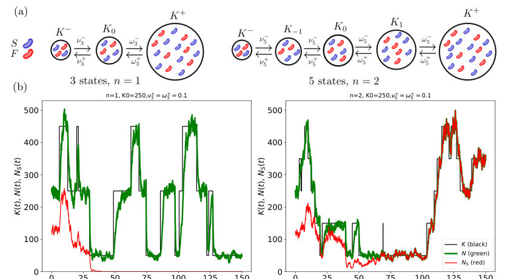
<figcaption class="paper-figure-caption"><b>Fig 1.</b> FIG. 1. (a) Illustration of the the 3-state (n = 1, left) and 5-state (n = 2, right) switching eco-evolutionary dynamics. (b) Typical sample paths of K(t) (black), N(t) (green), and NS(t) (red) for the 3-state (left) and 5-state (right) switching models with (K−, K+) = (50, 450). The number of F individuals is NF (t) = N(t) −NS(t) (not shown). (b, left) n = 1, K0 = 250, K(t) ∈{50, 250, 450}, ν± 3 = ω± 3 = 0.1 (intermediate switching regime; see text); (b, right) n = 2, K0 = 250, K(t) ∈{50, 150, 250, 350, 450}, ν± 5 = ω± 5 = 0.1 (intermediate switching). In (b, left), simultaneous S extinction and F fixation (not shown) occurs at t ≈35, whereas in (b, right) there is S fixation (with...</figcaption>
</figure>
<figure class="paper-figure-card">
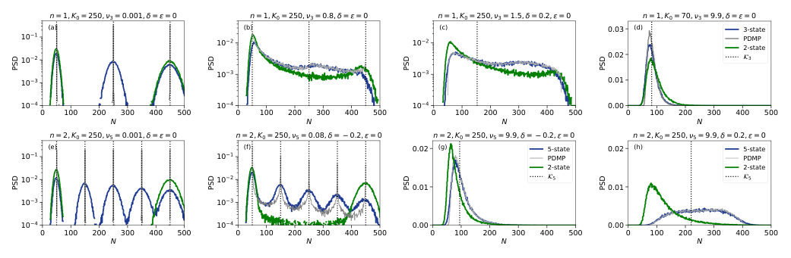
<figcaption class="paper-figure-caption"><b>Fig 2.</b> FIG. 2. Histograms of the quasi-stationary PSD, pν2n+1(N) (dark blue), for different switching rates for 3-state (a)- (d) and 5-state (b)-(h) multi-state switching models. In grey are shown the histograms of the N-PDMP (see Eq, (14) and Appendix C). These are compared with those of the PSD peν(N) = p(ν2n+1/n)(1+ϵ)/(2+ϵ)(N) of the effective two- state model (see text and Eq. (8)) shown in green. Panels (a)-(c), (e) and (f) are in semi-log scale (values &lt; 10−4 are not shown), while (d), (g) and (h) are in linear scale. The vertical dotted lines in (a),(b),(d),(e) are eyeguides show- ing N = Ki. In panels (c) (d),(g),(h) the dotted lines show K3 ≈153.23 (c) and K3 ≈82.17 (d), while in (g) and...</figcaption>
</figure>
<figure class="paper-figure-card">
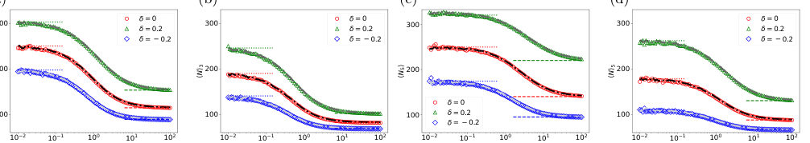
<figcaption class="paper-figure-caption"><b>Fig 3.</b> FIG. 3. Average population size ⟨N⟩2n+1 (markers) and ⟨N⟩PDMP 2n+1 (dash-dotted curves) versus ν2n+1 for different values of n, K0 and δ; see text and (15): (a) (n, K0) = (1, 250); (b) (n, K0) = (1, 70); (c) (n, K0) = (2, 250); (d) (n, K0) = (2, 70). In all panels, we have δ = 0 (red circles, black curves), δ = 0.2 (green triangles, dark gray curves), δ = −0.2 (blue diamonds, grey curves). The dotted and dashed horizontal lines are eyeguides respectively showing ⟨K⟩2n+1 = Pn i=−n Kiπi and K2n+1 (given by Eq. (13)) for each combination of n, K0, δ. Other parameters are (K−, K+, ϵ) = (50, 450, 0) in all panels. In all the examples, ⟨N⟩2n+1 and ⟨N⟩PDMP 2n+1 have been computed after t &gt; 5000,...</figcaption>
</figure>
<figure class="paper-figure-card">
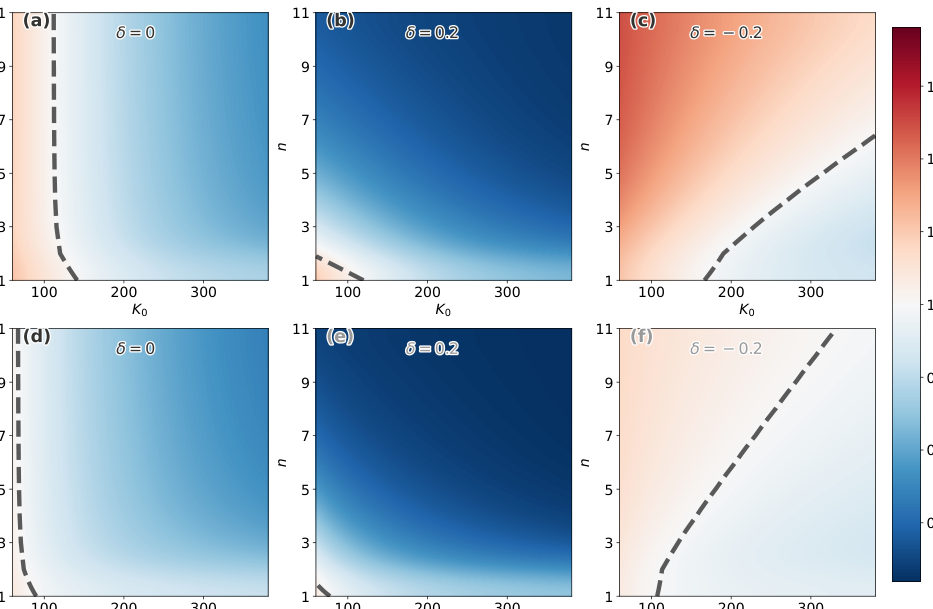
<figcaption class="paper-figure-caption"><b>Fig 4.</b> FIG. 4. Comparison of the S fixation probability in the regime of slow and fast switching in multi-state (n ≥1) and binary switching models: Heatmaps of the ratios ϕ0 2n+1/ϕ0 2 (slow switching) in (a)-(c) and ϕ∞ 2n+1/ϕ∞ 2 (fast switching) in (d)-(f) as colour-coded in the rightmost vertical bar; see text. Parameters are (K−, K+, s, x0, ϵ) = (50, 450, 0.02, 0.5, 0) and δ = 0 in (a,d), δ = 0.2 in (b,e), and δ = −0.2 in (c,f). For reference, K2 = 90 for δ = 0 , K2 ≈107.14 for δ = 0.2, and K2 ≈77.59 for δ = −0.2. In all panels, ϕ0,∞ 2n+1/ϕ0 2 &lt; 1 blueish areas and ϕ0,∞ 2n+1/ϕ0 2 &gt; 1 in yellow/orange regions. The black dashed lines (surrounded by a whitish cloud) indicate the contours along...</figcaption>
</figure>
<figure class="paper-figure-card">
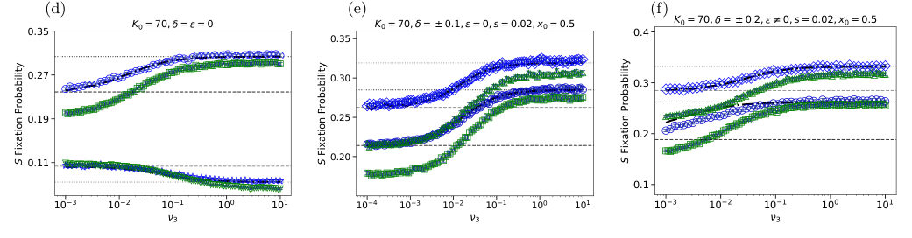
<figcaption class="paper-figure-caption"><b>Fig 5.</b> FIG. 5. S fixation probability in the three-state model as a function of the switching rate ν3. The centre state carrying capacity in (a)-(c) is K0 = 250, while K0 = 70 in (d)-(f). Here, n = 1, and (K−, K+) = (50, 450) in all panels except (c). Symbols are from full stochastic simulations and black dashed-dotted curves (in all panels), often almost indistinguishable from markers, are from the N-PDMP-based approximation; see Eq. (19). In blue, is shown ϕ3 vs. ν3 for different parameter sets: (δ, ϵ, s, x0) = (0, 0, 0.02, 0.5) (circles) in (a); (δ, ϵ, s, x0) = (0.2, 0, 0.02, 0.5) (circles) and (δ, ϵ, s, x0) = (−0.2, 0, 0.02, 0.5) (dia- monds) in (b); (δ, ϵ, s, x0, K−, K+) = (0.25, 0, 0.05,...</figcaption>
</figure>
</div>

<p><strong>Summary.</strong> This paper analyzes population competition in microbial systems subjected to complex, multi-state environmental fluctuations that mimic gradual feast-famine cycles. By developing a multi-state stochastic model, the authors show that these intermediate states significantly alter evolutionary outcomes compared to simple two-state models. The work provides quantitative tools for understanding how the complexity of environmental noise dictates population fate.</p>
<p><strong>Why it may be interesting.</strong> While focused on biology/ecology, the mathematical machinery—analyzing non-equilibrium dynamics in fluctuating environments using stochastic processes (like master equations or birth-death processes)—is highly relevant to open quantum systems and non-equilibrium statistical mechanics.</p>
<details>
<summary>Detailed structure</summary>
<p><strong>Main problem.</strong> The study investigates how population dynamics of competing strains are affected by environmental fluctuations that change gradually through multiple intermediate states, moving beyond simple binary switching models.</p>
<p><strong>Main result.</strong> Multi-state stochastic switching models provide a more accurate description of feast-famine cycles than binary models, allowing characterization of how fluctuation frequency and amplitude impact fixation probability and mean fixation time.</p>
<p><strong>Method.</strong> The authors use computational (Gillespie simulations) and analytical techniques to characterize population dynamics using multi-state birth-death processes and Moran model approximations.</p>
<p><strong>Model / system.</strong> The system models two competing microbial strains in an environment whose carrying capacity fluctuates stochastically among a finite number of intermediate states, generalizing classical binary telegraph noise.</p>
<p><strong>Key observables.</strong> Population size statistics, fixation probability, mean fixation time, and the population size distribution (PSD).</p>
<p><strong>Important parameters / regimes.</strong> Environmental switching rates ($
u$), carrying capacity distribution parameters ($\omega$), fitness difference ($s$), and initial strain fraction ($x_0$).</p>
<p><strong>Assumptions / limitations.</strong> The analysis relies on coarse-graining resource limitation into a time-varying carrying capacity $K(t)$ and uses approximations like the Moran process for finite populations.</p>
<p><strong>Figures summary.</strong> Figures illustrate schematic switching dynamics (3-state vs 5-state) and sample paths of environmental states, population size, and strain proportions over time.</p>
<p><strong>Paper structure.</strong> The paper first establishes the limitations of binary models by introducing the multi-state stochastic switching framework. It then details the model setup, analyzes mean-field dynamics, and finally applies the Moran process to calculate key evolutionary diagnostics like fixation probability and mean fixation time.</p>
</details>
<details>
<summary>Abstract</summary>
<p>Microbial populations generally evolve in fluctuating environments under time-varying conditions. These are often described by binary switching models, sometimes seen as coarse-grained feast-famine cycles, in which resource availability switches abruptly between abundant and scarce conditions. However, experimental studies suggest that feast-famine environments actually exhibit more complex temporal dynamics. Here, we study how two strains, one growing slightly slower than the other, compete for the same resources in fluctuating environments comprising a finite number of intermediate states, each having its own carrying capacity. Environmental switching between these states and their carrying capacities represents gradual changes in nutrient availability. This class of multi-state stochastic switching models can be interpreted as a coarse-grained description of feast--famine cycles and allows us to investigate strain competition under the gradual recovery and depletion of resources. By computational and analytical means, we characterise the population dynamics in these multi-state fluctuating environments. In particular, we study how the switching rates and distribution of carrying capacities affect the population-size statistics, fixation probability, and mean fixation time. By comparing these results with their counterparts in binary environments, we clarify how the frequency and amplitude of environmental fluctuations influence population dynamics in coarse-grained feast-famine cycles.</p>
</details>
<p><sub><a href="#top">↑ back to top</a></sub></p>

<p><a id="paper-2608.11556"></a></p>
<h3 id="exact-dynamics-of-first-order-system-bath-coherence-in-bilinear-bosonic-models"><a href="http://arxiv.org/abs/2608.11556v1">Exact dynamics of first-order system-bath coherence in bilinear bosonic models</a></h3>
<p><strong>Authors:</strong> Yang-Yang Xie, Song-Lin Wu, Paul Brumer, Zhao-Ming Wang, Lian-Ao Wu<br>
<strong>Type:</strong> theory · <strong>Category:</strong> other · <strong>PDF:</strong> <a href="https://arxiv.org/pdf/2608.11556v1">https://arxiv.org/pdf/2608.11556v1</a><br>
<strong>Analysis basis:</strong> full PDF text, analyzed in chunks
<strong>Topic relevance:</strong> <code>Keldysh / 2PI / non-Gaussian methods</code> <strong>3/5</strong> · <code>correlated / nonlocal dissipation</code> <strong>3/5</strong> · <code>methods for driven-dissipative</code> <strong>3/5</strong> · <code>Tavis-Cummings &amp; cavity-many-emitter</code> <strong>2/5</strong> · <code>driven-dissipative phase transition</code> <strong>2/5</strong> · <code>analog quantum simulation</code> <strong>1/5</strong> · <code>non-equilibrium universality</code> <strong>1/5</strong> · <code>quantum measurements</code> <strong>1/5</strong></p>
<div class="figure-strip-hint">↔ Scroll figures horizontally</div>
<div class="paper-figures-scroll">
<figure class="paper-figure-card">
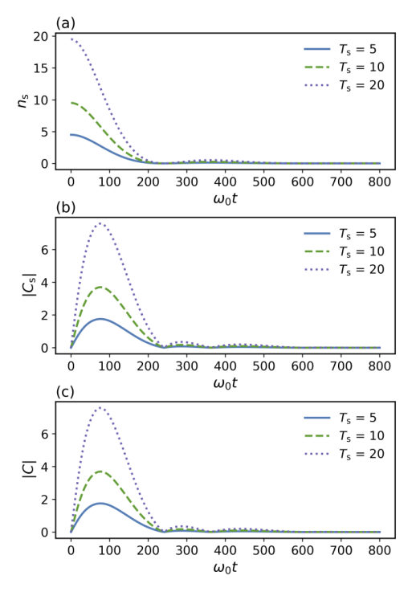
<figcaption class="paper-figure-caption"><b>Fig 1.</b> Figure 1. Effect of the system temperature Ts on the first- order system–bath coherence dynamics. (a) System occupa- tion number ns. (b) System-induced coherence contribution |Cs|. (c) Total first-order system–bath coherence amplitude |C| = |Cs + Cb|. Other parameters are ω0 = Ω= 1, Γ = 0.02, γ = 0.01, and Tb = 10.</figcaption>
</figure>
<figure class="paper-figure-card">
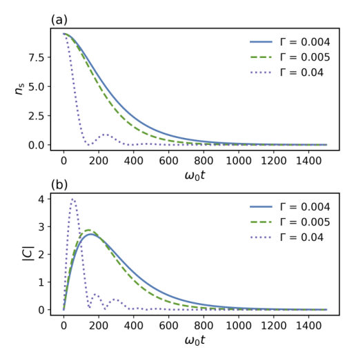
<figcaption class="paper-figure-caption"><b>Fig 2.</b> Figure 3. Effect of the coupling strength Γ on the first- order system–bath coherence dynamics. (a) System occupa- tion number ns. (b) First-order system–bath coherence am- plitude |C|. Other parameters are ω0 = Ω= 1, γ = 0.01, Ts = 10, and Tb = 1.</figcaption>
</figure>
<figure class="paper-figure-card">
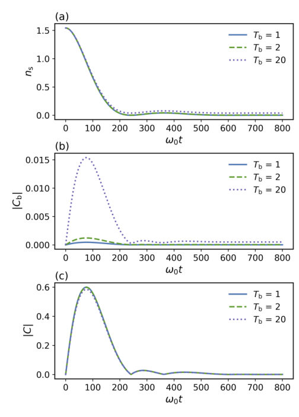
<figcaption class="paper-figure-caption"><b>Fig 3.</b> Figure 2. Effect of the bath temperature Tb on the first- order system–bath coherence dynamics. (a) System occu- pation number ns. (b) Bath-induced coherence contribution |Cb|. (c) Total first-order system–bath coherence amplitude |C| = |Cs + Cb|. Other parameters are ω0 = Ω= 1, Γ = 0.02, γ = 0.01, and Ts = 2.</figcaption>
</figure>
<figure class="paper-figure-card">
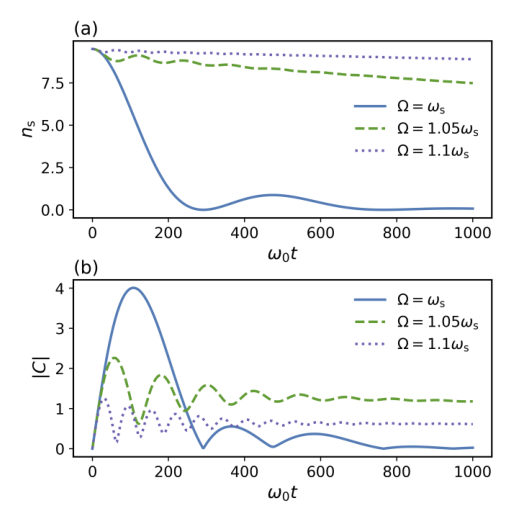
<figcaption class="paper-figure-caption"><b>Fig 4.</b> Figure 5. Effect of the detuning ∆= Ω−ω0 on the first- order system–bath coherence dynamics. (a) System occupa- tion number ns. (b) First-order system–bath coherence ampli- tude |C|. Other parameters are ω0 = 1, Γ = 0.02, γ = 0.005, Ts = 10, and Tb = 1.</figcaption>
</figure>
<figure class="paper-figure-card">
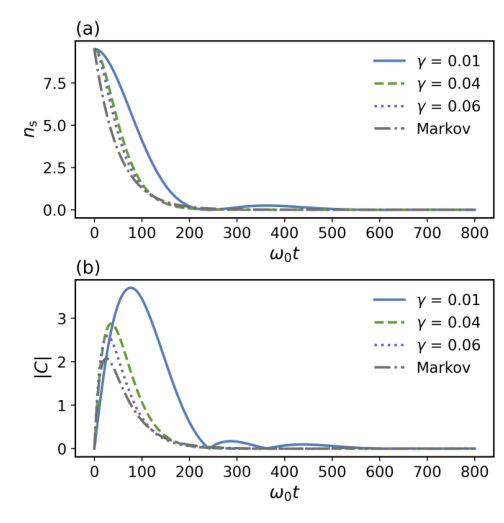
<figcaption class="paper-figure-caption"><b>Fig 5.</b> Figure 4. Effect of the spectral width γ on the first-order system–bath coherence dynamics. (a) System occupation number ns. (b) First-order system–bath coherence amplitude |C|. Other parameters are ω0 = Ω= 1, Γ = 0.02, Ts = 10, and Tb = 1.</figcaption>
</figure>
</div>

<p><strong>Summary.</strong> The paper theoretically analyzes how first-order coherence builds and evolves when a single bosonic mode interacts with a structured bath. By solving the full linear equations of motion, the authors demonstrate that reservoir memory effects (narrow spectral width) enhance transient coherence peaks. Furthermore, they show that active control via random frequency modulation can effectively suppress energy leakage into the environment, stabilizing quantum coherence at long times.</p>
<p><strong>Why it may be interesting.</strong> This work provides rigorous analytical insights into non-Markovian open quantum system dynamics, which is crucial for designing robust quantum devices where environmental coupling must be precisely controlled to preserve coherence.</p>
<details>
<summary>Detailed structure</summary>
<p><strong>Main problem.</strong> The study investigates the exact dynamics of first-order system–bath coherence induced by excitation exchange in bilinear bosonic models.</p>
<p><strong>Main result.</strong> Random frequency modulation is shown to be superior to periodic modulation for suppressing excitation leakage and maintaining stable, finite long-time coherence fluctuations.</p>
<p><strong>Method.</strong> The authors solve the linear Heisenberg equations exactly, avoiding approximations like Born or Markov limits, to derive time evolution coefficients for system and bath operators.</p>
<p><strong>Model / system.</strong> The model uses bilinear bosonic Hamiltonians describing a localized bosonic mode coupled to a structured continuum reservoir (e.g., cavity coupled to photonic/phononic crystal modes).</p>
<p><strong>Key observables.</strong> First-order system–bath coherence ($C(t)$), system occupation number ($n_s(t)$), and the time evolution of coupling coefficients.</p>
<p><strong>Important parameters / regimes.</strong> Coupling strength ($\Gamma$), spectral width ($\gamma$, controlling bath memory time), detuning ($\Delta = \Omega - \omega_0$), and modulation parameters ($\delta\omega_{	ext{max}}$, $  au_{    ext{ran}}$).</p>
<p><strong>Assumptions / limitations.</strong> The analysis relies on the linearity of the Heisenberg equations, allowing for closed-form solutions for expansion coefficients.</p>
<p><strong>Figures summary.</strong> Figures illustrate the effect of system temperature ($T_s$), spectral width ($\gamma$), and detuning ($\Delta$) on coherence. Crucially, they compare random versus rectangular modulation protocols, demonstrating random modulation's superior ability to suppress leakage and maintain coherence.</p>
<p><strong>Paper structure.</strong> The paper progresses from deriving exact dynamics using linear equations, analyzing the dependence of coherence on reservoir spectral features (memory/detuning), and finally developing a control scheme using LEO-inspired frequency modulation techniques.</p>
</details>
<details>
<summary>Abstract</summary>
<p>We investigate the exact dynamics of first-order system--bath coherence induced by excitation exchange in bilinear bosonic models. By solving the linear Heisenberg equations, we obtain the exact evolution of system and bath operators and evaluate the first-order coherence between the system mode and the collective bath mode directly coupled to it. We analyze how this coherence depends on initial occupations, coupling strength, spectral width, and detuning, showing that its buildup and oscillatory behavior are closely related to excitation exchange and reservoir memory. We further examine controlled coherence dynamics under leakage-elimination-operator inspired modulation of the system frequency. The results show that random modulation can suppress excitation leakage and maintain finite and relatively stable coherence fluctuations at long times. These results clarify the evolution and control of first-order system--bath coherence in settings where a localized bosonic mode is coupled to a structured bosonic reservoir.</p>
</details>
<p><sub><a href="#top">↑ back to top</a></sub></p>

<p><a id="paper-2608.12055"></a></p>
<h3 id="enhancing-the-power-of-a-quantum-heat-engine-via-control-of-the-system-reservoir-coupling"><a href="http://arxiv.org/abs/2608.12055v1">Enhancing the power of a quantum heat engine via control of the system--reservoir coupling</a></h3>
<p><strong>Authors:</strong> Sabrina Burgardt, Julian Feß, Silvia Hiebel, Eric Lutz, Artur Widera<br>
<strong>Type:</strong> experiment · <strong>Category:</strong> statistical mechanics · <strong>PDF:</strong> <a href="https://arxiv.org/pdf/2608.12055v1">https://arxiv.org/pdf/2608.12055v1</a><br>
<strong>Analysis basis:</strong> full PDF text, analyzed in chunks
<strong>Topic relevance:</strong> <code>analog quantum simulation</code> <strong>3/5</strong> · <code>correlated / nonlocal dissipation</code> <strong>3/5</strong> · <code>driven-dissipative phase transition</code> <strong>2/5</strong> · <code>methods for driven-dissipative</code> <strong>2/5</strong> · <code>Keldysh / 2PI / non-Gaussian methods</code> <strong>1/5</strong> · <code>QC/QI experiment</code> <strong>1/5</strong> · <code>non-equilibrium universality</code> <strong>1/5</strong> · <code>quantum measurements</code> <strong>1/5</strong></p>
<div class="figure-strip-hint">↔ Scroll figures horizontally</div>
<div class="paper-figures-scroll">
<figure class="paper-figure-card">
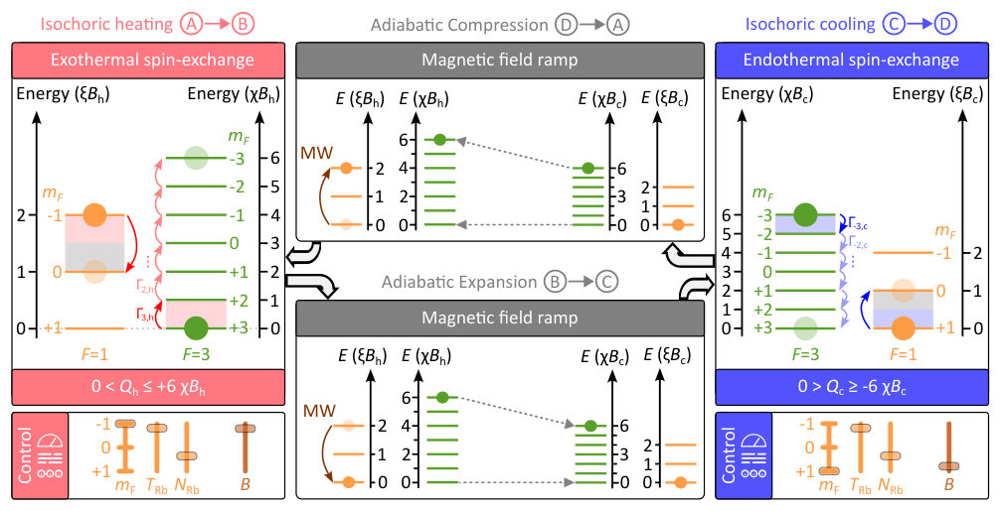
<figcaption class="paper-figure-caption"><b>Fig 1.</b> FIG. 1. Operation scheme of the quantum Otto heat engine. The working medium consists of the seven Zeeman states in the hyperfine ground-state manifold of Cs and undergoes a four-stroke cycle comprising two isochoric strokes and two adiabatic work strokes. The cycle starts with isochoric heating driven by exothermal spin-exchange collisions at a magnetic field Bh = 1 G, in which single quanta of heat (red shaded) are absorbed from the atomic reservoir of Rb atoms, while the excess internal energy (gray shaded) is released to the collision energy </figcaption>
</figure>
<figure class="paper-figure-card">
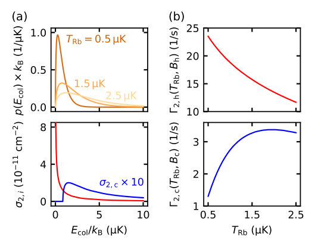
<figcaption class="paper-figure-caption"><b>Fig 2.</b> FIG. 2. Inelastic s-wave scattering. (a) Energy- dependent scattering cross sections of exothermal spin- exchange (red, Bh = 1 G) and endothermal spin-exchange (blue, Bc = 35 mG) for the Zeeman state mF,Cs = 2. The ki- netic temperature TRb of the atomic reservoir sets the range of accessible collision energies via the distribution function p(Ecol, TRb). (b) Transition rates resulting from the scatter- ing cross sections shown in (a) by evaluating Eq. (9) for var- ious kinetic temperatures TRb of the atomic bath at a fixed peak density nRb,0 = 2.2 × 1012 cm−3.</figcaption>
</figure>
<figure class="paper-figure-card">
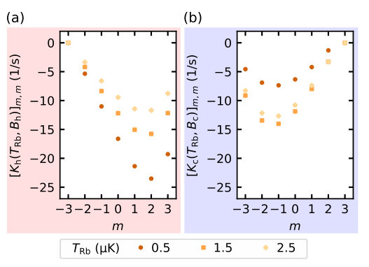
<figcaption class="paper-figure-caption"><b>Fig 3.</b> FIG. 3. Eigenvalues of the rate matrices governing heat trans- fer during the two isochoric strokes. Diagonal elements of the triangular rate matrices for isochoric heating (a) and iso- choric cooling (b), shown for three kinetic temperatures of the atomic reservoir, TRb = {0.5, 1.5, 2.5} µK, as obtained from Eqs. (7) and (8). Since the rate matrices are triangu- lar, their diagonal elements coincide with the eigenvalues λk, which determine the relaxation timescales entering the multi- exponential heat transfer law in Eq. (11). The magnetic fields are set to Bh = 1 G and Bc = 35 mG, and the peak density of the atomic reservoir is fixed at nRb,0 = 2.2 × 1012 cm−3.</figcaption>
</figure>
<figure class="paper-figure-card">
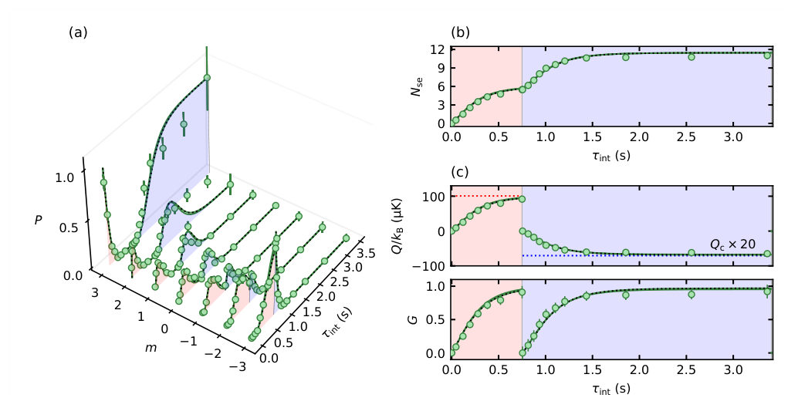
<figcaption class="paper-figure-caption"><b>Fig 4.</b> FIG. 4. Heat transfer driven by inelastic spin-exchange collisions. (a) Population dynamics of the seven Zeeman states in the working medium induced by exothermal spin-exchange collisions (red, isochoric heating) and endothermal spin-exchange collisions (blue, isochoric cooling). The working medium reaches full population inversion after an interaction time of approx- imately 750 ms. (b) Number-of-collisions evolution resulting from the measured spin dynamics. Full population inversion is reached after the maximal number of six spin-exchange collisions. (c) Heat transfer resulting from the spin-evolution driven by spin-exchange collisions. The evolution of the isochoric cooling stroke is...</figcaption>
</figure>
<figure class="paper-figure-card">
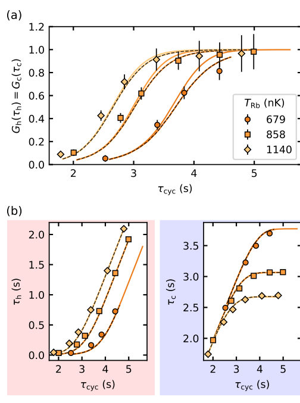
<figcaption class="paper-figure-caption"><b>Fig 5.</b> FIG. 5. Controlling the equilibration dynamics via the kinetic temperature of the atomic reservoir. (a) Evolution of the ther- malization factor Gh(τh) = Gc(τc) as a function of the total cycle duration τcyc for different kinetic temperatures TRb of the atomic reservoir. (b) Stroke durations required to reach a fixed fraction of equilibration, illustrating the redistribution of time allocation within the cycle. Increasing TRb induces a pronounced asymmetry: isochoric cooling accelerates, while isochoric heating slows down. The solid lines show the equili- bration dynamics resulting from our numerical model [Eq. (6)] without introducing free parameters, and the black dashed lines show the...</figcaption>
</figure>
</div>

<p><strong>Summary.</strong> The research experimentally demonstrates that the performance of a quantum heat engine can be optimized by controlling the system-reservoir coupling. Using ultracold atoms, the authors show that tuning the reservoir's kinetic temperature modifies the microscopic scattering rates governing heat transfer during the cycle's isochoric strokes. This provides a powerful tool for engineering finite-time energy conversion processes at the nanoscale.</p>
<p><strong>Why it may be interesting.</strong> This work bridges fundamental non-equilibrium thermodynamics with cutting-edge AMO physics. It shows how engineering the microscopic coupling (the reservoir interaction) can be a direct tool for optimizing macroscopic performance metrics like power in quantum engines, which is highly relevant to quantum energy technologies.</p>
<details>
<summary>Detailed structure</summary>
<p><strong>Main problem.</strong> The goal is to enhance the power output of a quantum heat engine operating at finite time by microscopically controlling the energy exchange between the working system and its environment (reservoir).</p>
<p><strong>Main result.</strong> The authors experimentally demonstrated that tuning the kinetic temperature of the reservoir allows for microscopic control over the heat transfer law, enabling optimization of the engine's power output while maintaining a fixed efficiency.</p>
<p><strong>Method.</strong> The study uses an experimental platform involving ultracold atoms to realize and measure the performance of a quantum Otto cycle, analyzing how collision-mediated energy exchange dictates the time evolution during isochoric strokes.</p>
<p><strong>Model / system.</strong> The system is a quantum Otto engine using $^{133}	ext{Cs}$ atoms as the working medium coupled to an $^{87}	ext{Rb}$ atomic reservoir. Heat transfer occurs via inelastic $s$-wave collisions, which are modeled by rate matrices governing population dynamics during heating and cooling strokes.</p>
<p><strong>Key observables.</strong> Power output ($P$), efficiency ($\eta$), cycle duration ($    au_{cyc}$), and the heat absorbed/released ($Q$).</p>
<p><strong>Important parameters / regimes.</strong> Kinetic temperature of the reservoir ($T_{	ext{Rb}}$), magnetic field difference ($\Delta B$), and the durations of the isochoric strokes ($  au_h,   au_c$).</p>
<p><strong>Assumptions / limitations.</strong> Adiabatic work strokes are assumed short enough that no spin-exchange collisions occur; the control mechanism relies on the asymmetric energy scaling of scattering cross-sections for different collision types.</p>
<p><strong>Figures summary.</strong> Figures illustrate the four-stroke cycle (isochoric heating/cooling, adiabatic expansion/compression) and show how cycle times ($  au_{cyc}$) depend strongly on $T_{	ext{Rb}}$ but weakly on $\Delta B$, while efficiency shows a monotonic dependence on $\Delta B$.</p>
<p><strong>Paper structure.</strong> The paper establishes the theoretical framework for heat exchange via collision rates, details the four-stroke cycle dynamics using master equations, and then experimentally demonstrates that tuning $T_{	ext{Rb}}$ provides the primary handle to optimize power output by controlling the relative time allocation between heating and cooling strokes.</p>
</details>
<details>
<summary>Abstract</summary>
<p>The non-equilibrium properties of open quantum systems are determined by the microscopic laws governing energy exchange with their environment. In particular, an enhancement of the performance of quantum heat engines has been predicted by speeding up the dynamics through control of the system--bath interaction. However, direct microscopic control of heat transfer between the machine and the reservoir has remained elusive so far. Here, we experimentally demonstrate such control in a quantum Otto engine realized with ultracold Cs-133 atoms coupled to an atomic reservoir of ultracold Rb-87 atoms. Heat exchange between the two is mediated by inelastic s-wave collisions whose energy-dependent scattering cross sections lead to an asymmetric equilibration dynamics in the isochoric heating and cooling strokes. By tuning the kinetic temperature of the atomic reservoir, we modify the associated microscopic scattering rates, and thereby the heat transfer law, giving control over the time allocation within the engine cycle through control over the microscopic, multi-exponential relaxation dynamics. This enables power output optimization at fixed efficiency. Our results establish microscopic control of system-reservoir interactions as a tool for manipulating heat flow at the nanoscale and engineering the finite-time performance of quantum thermal machines.</p>
</details>
<p><sub><a href="#top">↑ back to top</a></sub></p>

<p><a id="paper-2608.11314"></a></p>
<h3 id="teleportation-through-time-varying-channels-threshold-geometry-and-a-complete-positivity-bound-on-non-markovian-backflow"><a href="http://arxiv.org/abs/2608.11314v1">Teleportation through time-varying channels: threshold geometry and a complete-positivity bound on non-Markovian backflow</a></h3>
<p><strong>Authors:</strong> Chaibata Seida<br>
<strong>Type:</strong> theory · <strong>Category:</strong> quantum information and computing · <strong>PDF:</strong> <a href="https://arxiv.org/pdf/2608.11314v1">https://arxiv.org/pdf/2608.11314v1</a><br>
<strong>Analysis basis:</strong> full PDF text, analyzed in chunks
<strong>Topic relevance:</strong> <code>correlated / nonlocal dissipation</code> <strong>3/5</strong> · <code>methods for driven-dissipative</code> <strong>3/5</strong> · <code>quantum measurements</code> <strong>3/5</strong> · <code>Keldysh / 2PI / non-Gaussian methods</code> <strong>2/5</strong> · <code>driven-dissipative phase transition</code> <strong>2/5</strong> · <code>non-equilibrium universality</code> <strong>1/5</strong></p>
<div class="figure-strip-hint">↔ Scroll figures horizontally</div>
<div class="paper-figures-scroll">
<figure class="paper-figure-card">
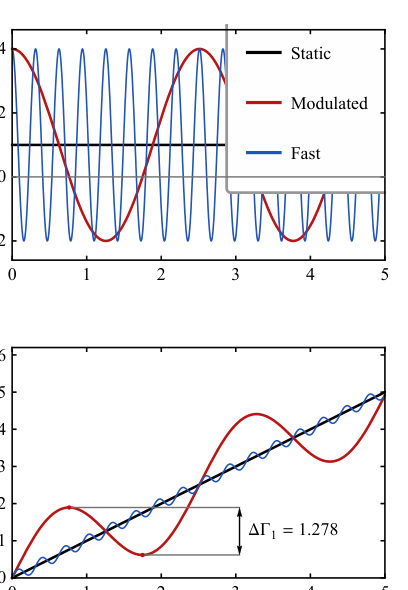
<figcaption class="paper-figure-caption"><b>Fig 1.</b> FIG. 1. Instantaneous rate γ1(t) (upper panel) and accumu- lated rate Γ1(t) (lower panel) for the three regimes of Sec. II C: static (ξ = 0), modulated (ξ = 3, Ω= 2.5γ1,0) and fast (ξ = 3, Ω= 20γ1,0). In both modulated cases the instanta- neous rate turns negative over part of each period, but only in the modulated one does this leave a visible mark on Γ1: the accumulated rate peaks at γ1,0t ≃0.76 and bottoms out at γ1,0t ≃1.75, separated by the peak-to-trough excursion ∆Γ1 = 1.278 of Eq. (14). Under fast modulation the same depth produces an excursion of order ξγ1,0/Ωand the curve is indistinguishable from the static one. The mean rate is γ1,0 in all three cases.</figcaption>
</figure>
<figure class="paper-figure-card">
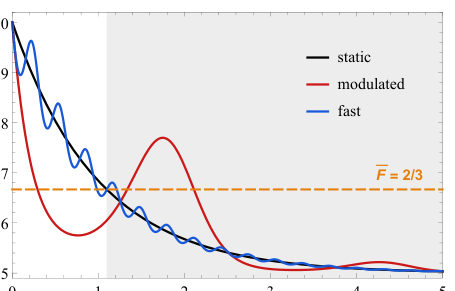
<figcaption class="paper-figure-caption"><b>Fig 2.</b> FIG. 2. One-sided exposure: negativity N(t) and average teleportation fidelity ¯F(t) for the three regimes. The dashed line is the classical benchmark ¯F = 2/3 and the shaded band is the useless-entanglement regime. Modulation drives excur- sions back above the benchmark, fragmenting that regime into finite windows, while N never reaches zero.</figcaption>
</figure>
<figure class="paper-figure-card">
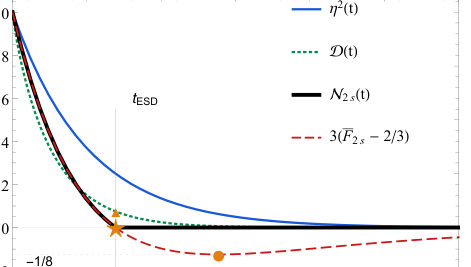
<figcaption class="paper-figure-caption"><b>Fig 3.</b> FIG. 3. Two-sided exposure. Upper panel: negativity N2s(t) for the static and modulated channels; the static channel dies once at tESD = ln 2, while modulation produces a sin- gle death–birth–death cycle (shaded) at γ1,0t ≃0.178, 1.599, 1.893. Lower panel: ordering of the static lifetimes, nor- malised to unity at t = 0: η2(t), D(t), 2N2s(t) and the fidelity margin 3( ¯F 2s −2/3). The last two coincide for t &lt; tESD by Eq. (26); past tESD the negativity is clamped at zero while the margin dips to −1/8 at γ1,0t = ln 4.</figcaption>
</figure>
<figure class="paper-figure-card">
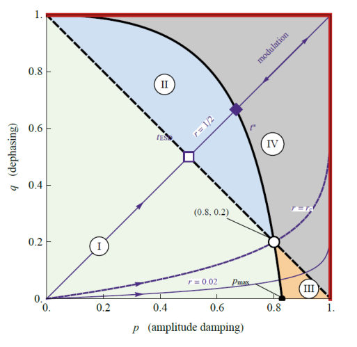
<figcaption class="paper-figure-caption"><b>Fig 4.</b> FIG. 4. Threshold landscape in the (p, q) plane. Solid: the one-sided advantage boundary 4(1 −p)(1 −q) = p2, meeting the axis at pmax = 2 √</figcaption>
</figure>
</div>

<p><strong>Summary.</strong> This paper analyzes the degradation of quantum entanglement and teleportation fidelity when qubits pass through time-varying decoherence channels. By mapping resource thresholds onto a fixed parameter space, the authors derive bounds on how much coherence can 'backflow' due to modulation. The results show that while resources decay overall, controlled modulation can lead to temporary revivals of quantum advantage.</p>
<p><strong>Why it may be interesting.</strong> This work provides rigorous mathematical bounds on how quantum resources can be temporarily restored or enhanced by time-varying environments, which is crucial for designing robust quantum communication protocols.</p>
<details>
<summary>Detailed structure</summary>
<p><strong>Main problem.</strong> The study investigates quantum teleportation fidelity through time-varying, non-Markovian decoherence channels.</p>
<p><strong>Main result.</strong> The analysis establishes a complete positivity bound on the backflow of coherence ($\Delta\Gamma_k \le 2\pi\gamma_{k,0}/\Omega$) and shows that modulation can induce transient revival of quantum advantage.</p>
<p><strong>Method.</strong> The authors model decoherence using time-local master equations, analyzing resource degradation by mapping thresholds onto a fixed $(p, q)$ plane.</p>
<p><strong>Model / system.</strong> The system involves teleporting an unknown qubit state via a shared entangled pair passing through a link combining amplitude damping and dephasing at time-dependent rates. The dynamics are parameterized by two accumulated damping factors, $p(t)$ and $q(t)$.</p>
<p><strong>Key observables.</strong> Negativity ($N$), Fully Entangled Fraction ($f$), Quantum Discord ($D$), and Average Teleportation Fidelity ($ar{F}$).</p>
<p><strong>Important parameters / regimes.</strong> Accumulated damping parameters $p(t)$ and $q(t)$; modulation depth $\xi_k$; the critical threshold condition $p+q \ge 1$ for entanglement vanishing.</p>
<p><strong>Assumptions / limitations.</strong> The time evolution separates into a fixed part and a moving one, depending only on accumulated damping parameters $p(t)$ and $q(t)$.</p>
<p><strong>Figures summary.</strong> Figure 1 illustrates the rate profiles ($\gamma_1(t), \Gamma_1(t)$) across static, fast, and modulated regimes. Figure 2 plots resource measures like negativity and fidelity over time for one-sided exposure.</p>
<p><strong>Paper structure.</strong> The paper first establishes the dynamics using accumulated parameters $p(t)$ and $q(t)$, then analyzes different noise geometries (one-sided vs. two-sided), deriving key bounds from complete positivity, and finally discussing resource revival phenomena under harmonic modulation.</p>
</details>
<details>
<summary>Abstract</summary>
<p>A Bell pair distributed through a link that combines amplitude damping with dephasing at time-dependent rates has dynamics that separate into a fixed part and a moving one. The negativity, fully entangled fraction, discord, and average teleportation fidelity depend on time only through the accumulated damping parameters $p(t)$ and $q(t)$. Every threshold is therefore a curve fixed in the unit square, and the rates select nothing but a trajectory across it. The Horodecki fidelity formula $\bar{F} = \frac{1}{2} + \frac{1}{6}\mathrm{Tr}|T|$ covers one- and two-sided exposure alike: the condition $\det T \leq 0$ under which it takes this form holds throughout the unit square for both. Under symmetric two-sided noise the entanglement vanishes when $p+q\geq1$, where the exact relation $\bar{F}^{2s}=\frac{2}{3}+\frac{1}{3}\mathcal{N}_{2s}$ ties disentanglement and the loss of quantum advantage to the same instant. One-sided exposure admits no finite-time sudden death for any rate profile, and the discord stays strictly positive throughout the open square, so the distributed state can be separable, useless for teleportation, and still nonclassical. For harmonically modulated rates, complete positivity caps the backflow at one modulation period of static decay, $ΔΓ_{k}\leq2πγ_{k,0}/Ω$, equivalently at a modulation depth $ξ_{k}\leq4.6033$ independent of $Ω$. Inside that window the trajectory reverses, producing finite intervals of restored quantum advantage and entanglement sudden birth.</p>
</details>
<p><sub><a href="#top">↑ back to top</a></sub></p>

<p><a id="paper-2608.11297"></a></p>
<h3 id="geometry-of-noisy-quantum-many-body-dynamics-with-continuous-symmetries-entanglement-and-correlations"><a href="http://arxiv.org/abs/2608.11297v1">Geometry of Noisy Quantum Many-Body Dynamics with Continuous Symmetries: Entanglement and Correlations</a></h3>
<p><strong>Authors:</strong> Marco Lastres, Sanjay Moudgalya<br>
<strong>Type:</strong> theory · <strong>Category:</strong> statistical mechanics · <strong>PDF:</strong> <a href="https://arxiv.org/pdf/2608.11297v1">https://arxiv.org/pdf/2608.11297v1</a><br>
<strong>Analysis basis:</strong> full PDF text, analyzed in chunks
<strong>Topic relevance:</strong> <code>methods for driven-dissipative</code> <strong>3/5</strong> · <code>non-equilibrium universality</code> <strong>3/5</strong> · <code>Keldysh / 2PI / non-Gaussian methods</code> <strong>2/5</strong> · <code>driven-dissipative phase transition</code> <strong>2/5</strong> · <code>analog quantum simulation</code> <strong>1/5</strong> · <code>correlated / nonlocal dissipation</code> <strong>1/5</strong> · <code>scars &amp; prethermalization</code> <strong>1/5</strong></p>
<div class="figure-strip-hint">↔ Scroll figures horizontally</div>
<div class="paper-figures-scroll">
<figure class="paper-figure-card">
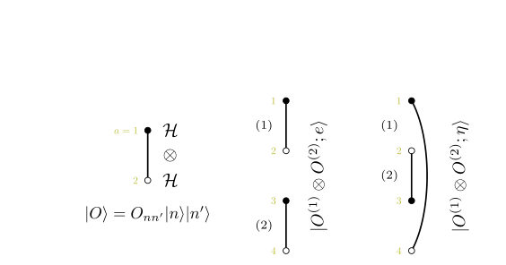
<figcaption class="paper-figure-caption"><b>Fig 1.</b> FIG. 1. Pictorial representations of the vectorization of the operator O 7→|O⟩on a duplicated Hilbert space, and the states defined in Eq. (13) for a k = 2 replica system (e ∈S2 is the identity permutation and η ∈S2 is the swap).</figcaption>
</figure>
<figure class="paper-figure-card">
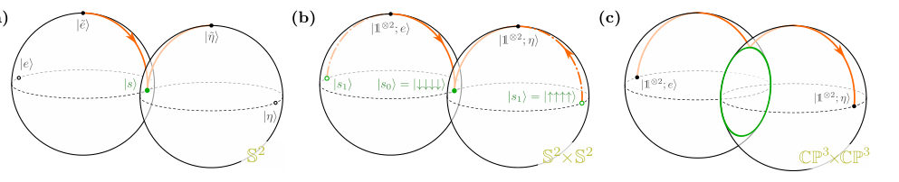
<figcaption class="paper-figure-caption"><b>Fig 2.</b> FIG. 2. Illustration of the ferromagnetic ground state manifolds of the models studied here. The lines show paths between the e and η branches that are relevant for entanglement domain wall melting. (a) Ground state manifold and of the esη toy model, composed of two Bloch spheres S2 which share the s-point. (b) Commutant manifold for a U(1) symmetry at k = 2 replicas, composed of two S2 × S2 manifolds that touch at two points. (c) Commutant manifold for a SU(2) symmetry at k = 2 replicas, composed of two CP3 × CP3 manifolds that intersect on a (S2)×4 continuous submanifold.</figcaption>
</figure>
<figure class="paper-figure-card">
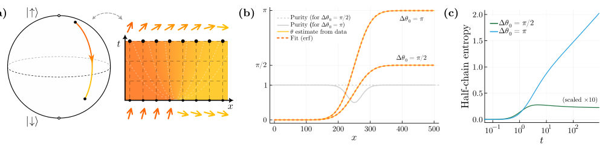
<figcaption class="paper-figure-caption"><b>Fig 3.</b> FIG. 3. (a) Illustration of the ground state manifold and diffusive relaxation for the Heisenberg model imaginary-time dynamics. For a 1d system, in the continuum limit a smooth field configuration can be seen as a curve on the Bloch sphere. (b) Spatial profile of the field θ(x, t) at late times extracted using Eq. (75) from numerical data of the Heisenberg model, compared to a fit of the TDVP solution Eq. (74). In light gray the purity of the one-site reduced density matrix for the ∆θ0 = π evolved state, where the TDVP equations have multiple equivalent solutions. (c) Half-chain entanglement entropy from numerical data for two evolved domain walls in the Heisenberg model. The entropy in...</figcaption>
</figure>
<figure class="paper-figure-card">
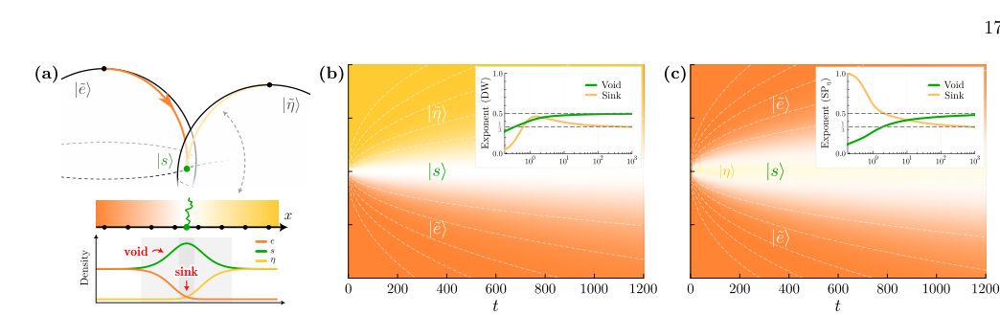
<figcaption class="paper-figure-caption"><b>Fig 4.</b> FIG. 4. (a) Illustration of a field configuration for the esη model, in particular associated to the evolution of the domain wall state |dw(t)⟩. To each position in space we associate a point on the ground state manifold MGS of Fig. 2a, and we treat the position of the s-point as a defect, which in the semiclassical limit remains stationary. We call void the region where the density of the |s⟩state dominates, and sink the region where density of |e⟩and |η⟩states overlap. (b) Density of |e⟩and |η⟩states in the evolution of |dw(t)⟩, showing the formation of the void the |s⟩density dominates. Inset, power law exponent for the growth of the void (diffusive) and sink (subdiffusive), the latter...</figcaption>
</figure>
<figure class="paper-figure-card">
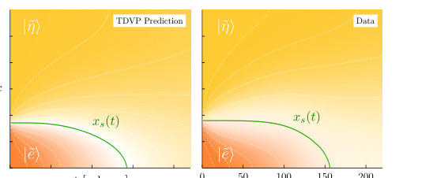
<figcaption class="paper-figure-caption"><b>Fig 5.</b> FIG. 5. Comparison between solution to the TDVP equa- tions of motion (left) and numerical simulation data (right) for a domain wall close to the spatial boundary of the sys- tem, showing its annihilation, as in Sec. V D 3. Time in the TDVP continuum prediction is in arbitrary units and has been approximately rescaled to match the data. Numerical data obtained using MPS simulation with L = 60, with other pa- rameters similar to Fig. 4.</figcaption>
</figure>
</div>

<p><strong>Summary.</strong> This paper develops a general geometric theory to analyze the late-time dynamics of noisy quantum many-body systems with continuous symmetries. By mapping the evolution onto the geometry of $k$-commutant manifolds, it explains anomalous decay rates and entanglement growth using concepts from quantum geometry. This framework offers systematic tools for studying observables in complex, non-equilibrium settings.</p>
<p><strong>Why it may be interesting.</strong> This work provides a powerful geometric framework for understanding non-equilibrium dynamics in complex quantum systems, linking symmetry structure directly to observable scaling laws like entanglement entropy.</p>
<details>
<summary>Detailed structure</summary>
<p><strong>Main problem.</strong> The study investigates unitary quantum dynamics in noisy many-body systems possessing global continuous symmetries, focusing on how entanglement and correlations evolve over time.</p>
<p><strong>Main result.</strong> The late-time evolution is governed by the quantum geometry of effective $k$-commutant manifolds, providing a geometric explanation for sub-ballistic entanglement growth and anomalous correlator decay linked to manifold singularities.</p>
<p><strong>Method.</strong> The authors employ replica theory, mapping dynamics to low-energy physics on effective Hamiltonians, and utilize the Time-Dependent Variational Principle (TDVP) adapted for singular ground state manifolds.</p>
<p><strong>Model / system.</strong> The analysis covers noisy Brownian models with continuous symmetries ($U(1), SU(2)$), generalized to interacting systems whose dynamics are characterized by $k$-commutant algebras. Specific toy models include the $es\eta$ model and free-fermion systems.</p>
<p><strong>Key observables.</strong> Rényi entanglement entropies, hydrodynamic and non-hydrodynamic correlators, and the geometry of $k$-commutants.</p>
<p><strong>Important parameters / regimes.</strong> The symmetry group ($U(1)$ vs. $SU(2)$), replica number ($k$), and system parameters defining the noise/interaction strength ($\lambda$, $\Delta$).</p>
<p><strong>Assumptions / limitations.</strong> Key challenges involve treating ground state manifolds that possess singularities, requiring extensions beyond standard smooth manifold dynamics treatments like TDVP.</p>
<p><strong>Figures summary.</strong> The notes do not provide a summary of figures, but mention calculations involving overlaps and entropy scaling for specific models.</p>
<p><strong>Paper structure.</strong> The paper is structured as a review: Section II covers Brownian models; Section III characterizes $k$-commutant manifolds; Section IV applies TDVP to smooth systems (Heisenberg); Section V introduces singularity physics via toy models; Sections VI and VII address entanglement growth in $U(1)$ and $SU(2)$ symmetric systems, respectively.</p>
</details>
<details>
<summary>Abstract</summary>
<p>We study unitary quantum dynamics in noisy Brownian models with global continuous symmetries, such as $U(1)$ and $SU(2)$, focusing on Rényi entanglement entropies and hydrodynamic and non-hydrodynamic correlators. By mapping the averaged late-time dynamics to the low-energy physics of effective replica Hamiltonians, we find that the evolution is controlled by the quantum geometry of their ground-state manifolds, which is directly related to the geometry of $k$-commutants---the symmetry algebra of $k$ replicas of the system. In interacting systems, these $k$-commutants are generically determined solely by the symmetries of the system, independent of microscopic details of the noisy evolution. This allows us to use the time-dependent variational principle (TDVP) to provide simple geometric explanations for the sub-ballistic Rényi entanglement growth and the anomalous decay of non-hydrodynamic correlators in interacting systems with continuous symmetries. We find this behavior to be intimately connected to singularities within the $k$-commutant manifolds, arising from frozen ``void'' states in the Hilbert space that exist due to continuous on-site symmetries. This also demystifies the important role of voids in the dynamics of these observables, previously identified in $U(1)$ symmetric systems. We compare these behaviors in interacting systems with Abelian and non-Abelian continuous symmetries and in free-fermion systems, which differ in the geometry of their $k$-commutants. Ultimately, this work provides a general geometric framework for systematically studying observables in noisy systems with continuous symmetries, including Haar-random circuits.</p>
</details>
<p><sub><a href="#top">↑ back to top</a></sub></p>

<p><a id="paper-2608.11751"></a></p>
<h3 id="light-induced-effective-magnetic-fields-in-landau-quantized-graphene"><a href="http://arxiv.org/abs/2608.11751v1">Light-induced effective magnetic fields in Landau quantized graphene</a></h3>
<p><strong>Authors:</strong> Hiroki Ueda, Alexej Pashkin, Ece Uykur, Kryštof Kašša, Filip Chudoba, Jan Kunc, Manfred Helm, Milan Orlita, Stephan Winnerl<br>
<strong>Type:</strong> experiment · <strong>Category:</strong> strongly correlated electrons · <strong>PDF:</strong> <a href="https://arxiv.org/pdf/2608.11751v1">https://arxiv.org/pdf/2608.11751v1</a><br>
<strong>Analysis basis:</strong> full PDF text, analyzed in chunks
<strong>Topic relevance:</strong> <code>Keldysh / 2PI / non-Gaussian methods</code> <strong>3/5</strong> · <code>driven-dissipative phase transition</code> <strong>2/5</strong> · <code>quantum optics experiment</code> <strong>2/5</strong> · <code>analog quantum simulation</code> <strong>1/5</strong> · <code>correlated / nonlocal dissipation</code> <strong>1/5</strong> · <code>interference shaping light</code> <strong>1/5</strong> · <code>methods for driven-dissipative</code> <strong>1/5</strong> · <code>non-equilibrium universality</code> <strong>1/5</strong> · <code>quantum measurements</code> <strong>1/5</strong></p>
<div class="figure-strip-hint">↔ Scroll figures horizontally</div>
<div class="paper-figures-scroll">
<figure class="paper-figure-card">
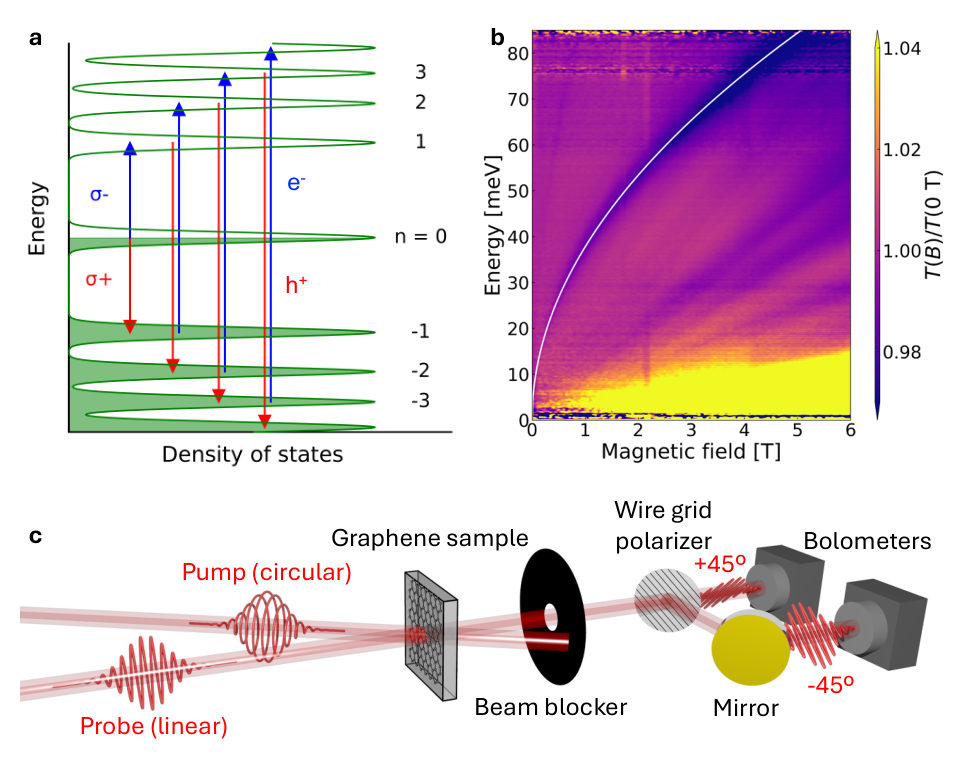
<figcaption class="paper-figure-caption"><b>Fig 1.</b> Figure 1: Energy diagram and experimental setup. a, Energy diagram of the Landau levels in graphene. Circular polarization selectively couples to electron (upward arrows) or hole (downward arrows) excitations between the levels. Red and blue arrows denote excitations by σ+ and σ−polarizations, respectively. b, Magneto-transmission spectra of the measured graphene sample, where the white curve indicates the Landau-level transition from n = 0 to n = ±1, following E(B) = vF √</figcaption>
</figure>
<figure class="paper-figure-card">
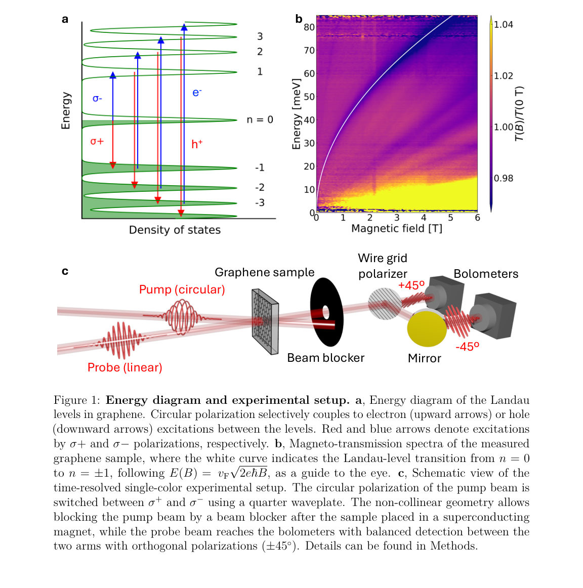
<figcaption class="paper-figure-caption"><b>Fig 2.</b> Fig. 1c and Methods for details). The pump pulse was circularly polarized (σ+ for right and</figcaption>
</figure>
<figure class="paper-figure-card">
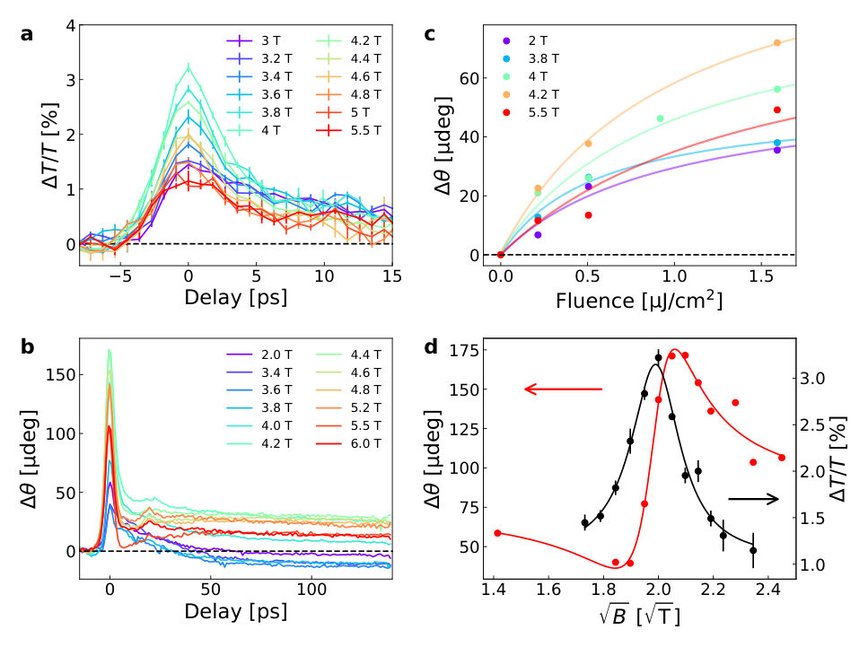
<figcaption class="paper-figure-caption"><b>Fig 3.</b> Figure 2: Characterization of the dynamics triggered by circularly polarized terahertz pulses. a, Differential transmission ∆T/T and b, polarization rotation angle ∆θ at different magnetic fields as a function of pump-probe delay. c, Fluence (F) dependence of peak ∆θ signals at different magnetic fields. Curves are guides to the eye from the fit to the Langmuir saturation model, ∆θ(F) = ∆θmax F F+Fsat, where ∆θmax and Fsat represent the saturation amplitude and the fluence over which saturation occurs, respectively. Obtained Fsat is ∼1 µJ/cm2. d, Magnetic field dependence of ∆T/T (black) and ∆θ (red), extracted from the data shown in a and b, respectively. The black and red solid curves...</figcaption>
</figure>
<figure class="paper-figure-card">
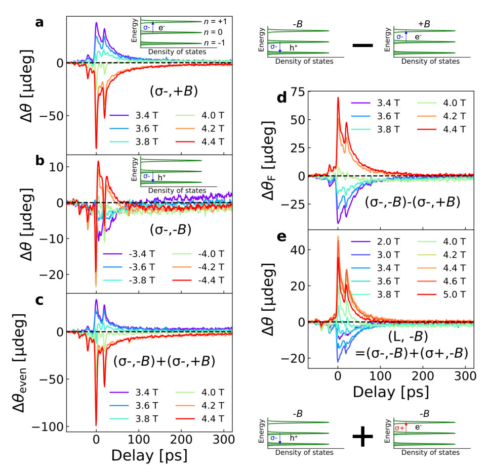
<figcaption class="paper-figure-caption"><b>Fig 4.</b> Figure 3: Pump polarization and magnetic field dependences of the polarization rotation signals. Polarization rotation angle ∆θ measured at different magnetic fields and pump beam polarizations as a function of pump-probe delay: a, (σ−, +B), b, (σ−, −B), and e, (L, −B). The inset in a and b represents the corresponding excitation diagram. c, Sum and d, difference of the data shown in a and b. The comparison between d and e demonstrates the equivalence between (σ+, −B) and sign-flipped (σ−, +B) data, as indicated by the excitation diagram shown above or below each panel (see main text for details). The difference data shown in d corresponds to the Faraday rotation ∆θF, while the sum data...</figcaption>
</figure>
<figure class="paper-figure-card">
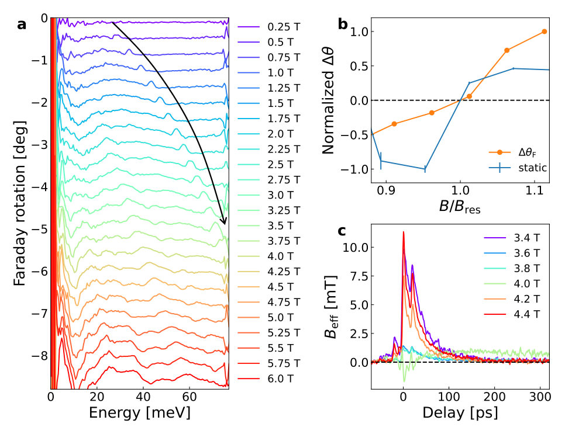
<figcaption class="paper-figure-caption"><b>Fig 5.</b> Figure 4: Effective magnetic fields extracted by comparison to static Faraday rotation spectra. a, Static Faraday rotation spectra measured at different magnetic fields. Each data is vertically shifted for clarity. The black arrow is a guide to the eye to follow Faraday rotation signals due to the first Landau-level transition between n = 0 and n = ±1. b, B evolution of the static and transient Faraday rotation signals (blue and orange, respectively) normalized for comparison. Because of instrumental artifacts near 75 meV in the static data, the data around 71 meV is shown instead, normalized to the resonant field. Here, ∆θF represents the peak values in the time traces. c, Time traces of...</figcaption>
</figure>
</div>

<p><strong>Summary.</strong> This paper experimentally demonstrates how circularly polarized light can induce transient effective magnetic fields in graphene by selectively exciting transitions between Landau quantized energy levels. By analyzing the resulting magneto-optical response, the authors establish a clear microscopic picture of the electronic inverse Faraday effect, opening avenues for ultrafast control over spin and magnetoelectric functionalities.</p>
<p><strong>Why it may be interesting.</strong> The work provides a clean, tunable platform to observe fundamental many-body quantum coupling effects (like the inverse Faraday effect) in Dirac materials using light, which is highly relevant for developing next-generation opto-spintronic devices.</p>
<details>
<summary>Detailed structure</summary>
<p><strong>Main problem.</strong> Investigating light-induced effective magnetic fields generated by circularly polarized radiation in graphene, relevant for ultrafast spin control.</p>
<p><strong>Main result.</strong> The study demonstrates a direct, time-resolved link between resonant Landau-level excitation and the modification of optical Hall conductivity, generating an effective magnetic field on the order of 10 mT.</p>
<p><strong>Method.</strong> Time-resolved pump-probe spectroscopy using circularly polarized terahertz pulses ($\sigma^+$ and $\sigma^-$) to selectively excite non-equidistant Landau quantized states in graphene.</p>
<p><strong>Model / system.</strong> The physical system is graphene, a prototypical Dirac material, studied under an applied magnetic field ($B$) where electron energy levels are quantized into Landau levels. The analysis focuses on the electronic origin of the inverse Faraday effect.</p>
<p><strong>Key observables.</strong> Transient Faraday rotation signals ($\Delta	heta$), differential transmission ($\Delta T/T$), and the extracted effective magnetic field ($\mathbf{B}_{	ext{eff}}$).</p>
<p><strong>Important parameters / regimes.</strong> Pump fluence ($\sim 1.6 \mu	ext{J}/	ext{cm}^2$); Effective magnetic field magnitude ($\sim 10 	ext{ mT}$); Landau level transitions ($n=-1 	o n=0$, etc.).</p>
<p><strong>Assumptions / limitations.</strong> The fast-timescale dynamics are attributed purely to electronic effects via the optical Hall conductivity, isolating this mechanism from phonon or sublattice contributions.</p>
<p><strong>Figures summary.</strong> Figures show energy diagrams of Landau levels and time traces of polarization rotation ($\Delta	heta$) vs. delay time at various magnetic fields, demonstrating field dependence across resonance.</p>
<p><strong>Paper structure.</strong> The paper establishes the physical problem (ultrafast spin control), details the experimental setup using selective resonant excitation in graphene's Landau levels, analyzes the magneto-optical response by separating contributions ($\Delta	heta_F$), and concludes that the signal originates from the optical Hall conductivity mechanism.</p>
</details>
<details>
<summary>Abstract</summary>
<p>Ultrafast magnetism triggered by circularly polarized radiation underpins ultrafast spin control, relevant to future technologies, e.g., opto-spintronics and magnonics. The dynamics are often complicated and intertwined among correlated subsystems, such as electrons, spins, phonons, plasmons, topology, and lattice, due to many-body quantum coupling at ultrafast timescales. Here, we demonstrate light-induced effective magnetic fields generated by selective excitation between non-equidistant Landau quantized states in graphene, a prototypical Dirac material, using circularly polarized pulses. By magnetically tuning the Landau-level transition resonance away from other low-energy excitations, we obtain a clean electrostatically controllable platform and identify the microscopic origin of the light-induced magnetic signals, independent of sublattice coupling. Because different Landau levels carry distinct optical Hall conductivities, direct modification of their occupancies via optical excitations creates transient Faraday rotation signals with dispersive magnetic-field dependence, mirroring the static magneto-optical lineshape. The induced effective magnetic field normalized by the pump electric field exceeds typical reported values for the inverse Faraday effect of electronic origin. Our results establish a clear microscopic picture of the inverse Faraday effect of electronic origin, which can trigger hierarchical dynamics among correlated sublattices once Landau-level transitions are magnetically tuned to coincide with other low-energy excitations in Dirac systems and related materials.</p>
</details>
<p><sub><a href="#top">↑ back to top</a></sub></p>

<p><a id="paper-2608.12300"></a></p>
<h3 id="quantum-limited-imaging-using-diffractive-optical-neural-networks"><a href="http://arxiv.org/abs/2608.12300v1">Quantum-limited imaging using diffractive optical neural networks</a></h3>
<p><strong>Authors:</strong> Aakash Warke, Aonan Zhang, A. I. Lvovsky<br>
<strong>Type:</strong> both · <strong>Category:</strong> other · <strong>PDF:</strong> <a href="https://arxiv.org/pdf/2608.12300v1">https://arxiv.org/pdf/2608.12300v1</a><br>
<strong>Analysis basis:</strong> full PDF text, analyzed in chunks
<strong>Topic relevance:</strong> <code>interference shaping light</code> <strong>3/5</strong> · <code>quantum measurements</code> <strong>3/5</strong> · <code>quantum optics experiment</code> <strong>3/5</strong> · <code>Full counting statistics</code> <strong>1/5</strong> · <code>analog quantum simulation</code> <strong>1/5</strong> · <code>driven-dissipative phase transition</code> <strong>1/5</strong> · <code>methods for driven-dissipative</code> <strong>1/5</strong></p>
<div class="figure-strip-hint">↔ Scroll figures horizontally</div>
<div class="paper-figures-scroll">
<figure class="paper-figure-card">
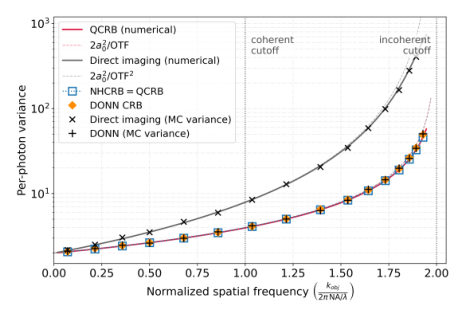
<figcaption class="paper-figure-caption"><b>Fig 1.</b> FIG. 1: Variances for single-amplitude estimation and the corresponding precision bounds. The NHCRB coincides with the QCRB, and the trained 8-layer DONN saturates it at every spatial frequency. DI falls short of this benchmark. The CRBs for DI and DONN are consistent with the variance of the estimator (9) tested via Monte Carlo (MC) simulations.</figcaption>
</figure>
<figure class="paper-figure-card">
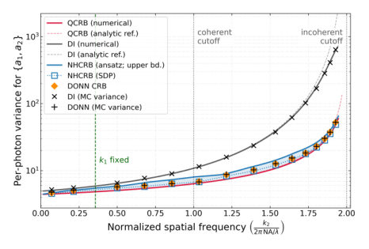
<figcaption class="paper-figure-caption"><b>Fig 2.</b> FIG. 2: Two-amplitude estimation. The first spatial frequency is fixed at 0.36. The total variance of both amplitudes is plotted as a function of the second spatial frequency, with the precision bounds Tr[F −1]. The NHCRB detaches from the QCRB and reconverges near the incoherent cutoff. Shaded region shows the upper bound (10), validating our SDP implementation, and a 10-layer DONN saturates the NHCRB across the band.</figcaption>
</figure>
<figure class="paper-figure-card">
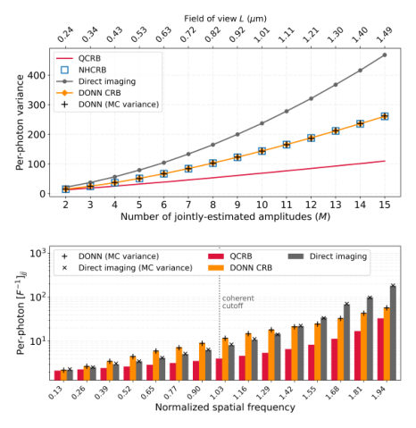
<figcaption class="paper-figure-caption"><b>Fig 3.</b> FIG. 3: Total variances for multiple amplitude estimation and the corresponding precision bounds. (a) For up to fifteen parameters equally spaced across the band, the NHCRB scales linearly, away from the QCRB. A suitably deep DONN, taken as 2M layers for M parameters, consistently saturates the NHCRB as parameters increase. (b) The per-parameter variances (log-y) at M = 15 show that DONN gains advantage over DI by prioritizing higher frequency amplitudes.</figcaption>
</figure>
<figure class="paper-figure-card">
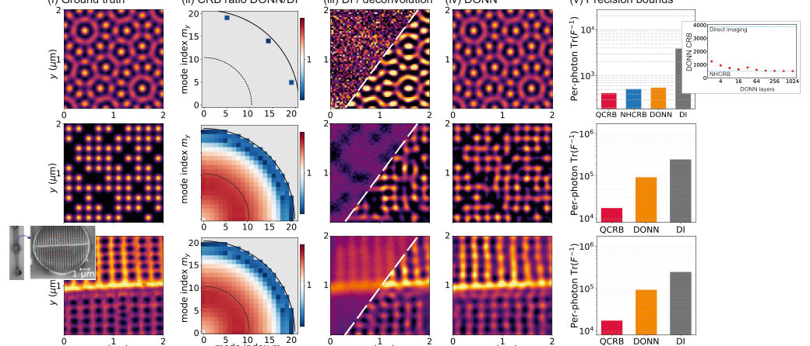
<figcaption class="paper-figure-caption"><b>Fig 4.</b> FIG. 4: Image reconstructions of 2D objects with sub-Rayleigh features. Each object occupies a 2 × 2 µm square field of view. Top: abstract pattern with three nonzero spatial frequency components. Middle: simulated atomic lattice. Bottom: SEM microphotograph of Amphipleura pellucida. (i) Ground truth object. (ii) DONN/DI variance ratio for individual spatial frequency components showing DONN advantage for high frequencies. (iii) Direct image and its deconvolution. (iv) DONN reconstruction, which recovers fine features of the object. (v) Precision bars comparing per-photon Tr[F −1] for the QCRB, NHCRB (computable for the first object only), DONN, and DI. Top inset: dependence of the DONN...</figcaption>
</figure>
</div>

<p><strong>Summary.</strong> This paper reformulates general optical imaging as a multiparameter quantum estimation problem and proposes using Diffractive Optical Neural Networks (DONN) to build an optimal measurement apparatus. By training the DONN, the authors show it can saturate fundamental quantum precision limits, enabling super-resolution image reconstruction that surpasses classical diffraction limitations.</p>
<p><strong>Why it may be interesting.</strong> This work bridges quantum metrology with deep learning, providing a concrete, scalable physical implementation (the DONN) that achieves theoretically predicted quantum limits for complex sensing tasks like superresolution microscopy.</p>
<details>
<summary>Detailed structure</summary>
<p><strong>Main problem.</strong> The paper addresses how to perform general imaging, which is formulated as a multiparameter quantum estimation problem of spatial-frequency amplitudes, aiming to surpass the diffraction limit.</p>
<p><strong>Main result.</strong> They demonstrate that an architecture based on Diffractive Optical Neural Networks (DONN) can saturate the theoretical quantum limits (specifically the Nagaoka-Hayashi Cramér-Rao bound), achieving superresolution reconstruction.</p>
<p><strong>Method.</strong> The authors combine quantum estimation theory (using bounds like NHCRB and QCRB) with machine learning by training a DONN to implement an optimal measurement apparatus that estimates multiple object amplitudes simultaneously.</p>
<p><strong>Model / system.</strong> The physical system is optical imaging, modeled as collecting a quantum state whose parameters are the unknown Fourier-cosine expansion coefficients of the object intensity. The proposed measurement device is the DONN, which acts as a trainable unitary transformation followed by photon counting.</p>
<p><strong>Key observables.</strong> Object amplitudes ($   heta = {a_k}$), Quantum Fisher Information Matrix (FIM), and measured photon counts ($n_d$).</p>
<p><strong>Important parameters / regimes.</strong> Low-contrast regime ($a_k \ll a_0$), number of estimated parameters ($M$), and the achievable quantum limit.</p>
<p><strong>Assumptions / limitations.</strong> The analysis relies heavily on the low-contrast approximation ($
ho  o 
ho_0$) for deriving analytic bounds, and assumes Poissonian statistics for photon counts when calculating the estimator variance.</p>
<p><strong>Figures summary.</strong> Figures illustrate that the trained DONN saturates the quantum limit across single, two, and multiple amplitude estimations, showing superior performance compared to direct imaging deconvolution in 2D reconstruction.</p>
<p><strong>Paper structure.</strong> The paper first formulates general imaging as a quantum estimation problem, deriving theoretical bounds (NHCRB). It then introduces the DONN architecture, trains it using gradient descent to minimize the bound loss, and finally validates its performance by comparing reconstructions against direct imaging methods across increasing numbers of estimated parameters.</p>
</details>
<details>
<summary>Abstract</summary>
<p>We cast general imaging as multiparameter quantum estimation of band-limited spatial-frequency amplitudes. For separable (single-copy) measurements, we compute precision limits using semidefinite programming to evaluate the Nagaoka-Hayashi Cramér-Rao bound. We then introduce an architecture for a measurement apparatus based on diffractive optical neural networks and photon counting that saturates this bound. Extending the framework to arbitrary objects and many amplitudes, we show image reconstructions in which our architecture recovers fine features at the quantum limit, outperforming direct imaging. Together, these results open a scalable route to saturating multiparameter quantum limits in superresolution microscopy, telescopy, and remote sensing.</p>
</details>
<p><sub><a href="#top">↑ back to top</a></sub></p>

<p><a id="paper-2608.11934"></a></p>
<h3 id="state-resolved-quantum-transport-of-vortex-electrons-in-accelerators"><a href="http://arxiv.org/abs/2608.11934v1">State-resolved quantum transport of vortex electrons in accelerators</a></h3>
<p><strong>Authors:</strong> S. S. Baturin<br>
<strong>Type:</strong> theory · <strong>Category:</strong> other · <strong>PDF:</strong> <a href="https://arxiv.org/pdf/2608.11934v1">https://arxiv.org/pdf/2608.11934v1</a><br>
<strong>Analysis basis:</strong> full PDF text, analyzed in chunks
<strong>Topic relevance:</strong> <code>driven-dissipative phase transition</code> <strong>3/5</strong> · <code>methods for driven-dissipative</code> <strong>3/5</strong> · <code>Keldysh / 2PI / non-Gaussian methods</code> <strong>2/5</strong> · <code>correlated / nonlocal dissipation</code> <strong>2/5</strong> · <code>quantum measurements</code> <strong>2/5</strong> · <code>non-equilibrium universality</code> <strong>1/5</strong></p>
<div class="figure-strip-hint">↔ Scroll figures horizontally</div>
<div class="paper-figures-scroll">
<figure class="paper-figure-card">

<figcaption class="paper-figure-caption"><b>Fig 1.</b> Low-resolution page preview, page 2</figcaption>
</figure>
<figure class="paper-figure-card">

<figcaption class="paper-figure-caption"><b>Fig 2.</b> Low-resolution page preview, page 3</figcaption>
</figure>
<figure class="paper-figure-card">

<figcaption class="paper-figure-caption"><b>Fig 3.</b> Low-resolution page preview, page 4</figcaption>
</figure>
<figure class="paper-figure-card">

<figcaption class="paper-figure-caption"><b>Fig 4.</b> Low-resolution page preview, page 5</figcaption>
</figure>
<figure class="paper-figure-card">

<figcaption class="paper-figure-caption"><b>Fig 5.</b> Low-resolution page preview, page 6</figcaption>
</figure>
</div>

<p><strong>Summary.</strong> This paper develops a density-matrix theory to study how the quantum structure of vortex electrons is maintained during acceleration in circular lattices. It models noise effects using a Lindblad master equation, showing that while ideal transport preserves an OAM invariant, stochastic imperfections cause leakage quantified by specific rates for real accelerators.</p>
<p><strong>Why it may be interesting.</strong> This work provides a rigorous framework for analyzing decoherence and quantum state preservation in highly coherent particle beam dynamics, drawing parallels between accelerator physics and open quantum systems theory (Lindblad master equations).</p>
<details>
<summary>Detailed structure</summary>
<p><strong>Main problem.</strong> The core problem is developing a density-matrix theory to determine if state-resolved quantum structure, specifically intrinsic Orbital Angular Momentum (OAM), can be preserved during the transport of vortex electrons in accelerator lattices.</p>
<p><strong>Main result.</strong> Ideal transport preserves the Lewis-Floquet OAM invariant stroboscopically; however, stochastic imperfections generate a Lindblad channel, with quadrupole noise driving an intrinsic $\Delta\ell = \pm 2$ leakage rate that can be quantified for specific accelerators.</p>
<p><strong>Method.</strong> The analysis uses density-matrix theory, deriving a master equation incorporating coherent evolution (from the Hamiltonian) and irreversible decoherence (from stochastic noise terms).</p>
<p><strong>Model / system.</strong> The system is modeled as vortex electrons moving in periodic round accelerator lattices. The dynamics are described by an effective quadratic Hamiltonian, leading to a density matrix evolution governed by both unitary and Lindblad terms.</p>
<p><strong>Key observables.</strong> Lewis-Floquet orbital angular momentum (OAM) invariant ($\hat{I}_L$), local kinetic OAM ($\hat{L}_{kin}$), centroid smearing, and intrinsic $\Delta\ell = \pm 2$ leakage rate ($\Lambda_q$).</p>
<p><strong>Important parameters / regimes.</strong> The inverse initial leakage scale is calculated for specific machines (e.g., $2	imes10^5$ turns for IOTA).</p>
<p><strong>Assumptions / limitations.</strong> The analysis relies on quadratic approximations of the Hamiltonian and separates deterministic mismatch from stochastic noise sources to construct the Lindblad master equation.</p>
<p><strong>Figures summary.</strong> Not specified in the notes, but comparisons are made between laboratory smearing limits ($\Lambda^{-1}_d$) and intrinsic quadrupole leakage rates ($\Lambda^{-1}_q$).</p>
<p><strong>Paper structure.</strong> The paper builds from defining the system Hamiltonian and invariants (Lewis-Floquet basis) to deriving the full master equation incorporating noise sources. It then analyzes how different types of noise perturb the conserved quantum structure, culminating in quantitative estimates of coherence loss.</p>
</details>
<details>
<summary>Abstract</summary>
<p>We develop a density-matrix theory of vortex-electron transport in accelerator lattices. In a periodic round lattice, the protected object is a Lewis-Floquet orbital angular momentum (OAM) invariant rather than the instantaneous kinetic OAM. Ideal transport has a metaplectic lift; stochastic imperfections generate a Lindblad channel. Dipole noise produces removable centroid smearing; quadrupole noise drives intrinsic $Δ\ell=\pm2$ leakage. Under explicit white-noise benchmarks, the inverse initial leakage scale is $2\times10^5$ turns for IOTA and $2\times10^6$ turns for PETRA III.</p>
</details>
<p><sub><a href="#top">↑ back to top</a></sub></p>

<p><a id="paper-2608.11585"></a></p>
<h3 id="unifying-physical-backpropagation"><a href="http://arxiv.org/abs/2608.11585v1">Unifying Physical Backpropagation</a></h3>
<p><strong>Authors:</strong> Cyrill Bösch, Yigithan Gediz, Hakan Türeci<br>
<strong>Type:</strong> theory · <strong>Category:</strong> disordered systems and neural networks · <strong>PDF:</strong> <a href="https://arxiv.org/pdf/2608.11585v1">https://arxiv.org/pdf/2608.11585v1</a><br>
<strong>Analysis basis:</strong> full PDF text, analyzed in chunks
<strong>Topic relevance:</strong> <code>Keldysh / 2PI / non-Gaussian methods</code> <strong>3/5</strong> · <code>analog quantum simulation</code> <strong>3/5</strong> · <code>driven-dissipative phase transition</code> <strong>2/5</strong> · <code>methods for driven-dissipative</code> <strong>2/5</strong> · <code>correlated / nonlocal dissipation</code> <strong>1/5</strong> · <code>non-equilibrium universality</code> <strong>1/5</strong> · <code>quantum measurements</code> <strong>1/5</strong></p>
<div class="figure-strip-hint">↔ Scroll figures horizontally</div>
<div class="paper-figures-scroll">
<figure class="paper-figure-card">

<figcaption class="paper-figure-caption"><b>Fig 1.</b> Figure 1: Conceptual overview of optimizing a physical system with the adjoint method. The physical state u(t) evolves under the forward dynamics M¨u + D ˙u + F[u, p] = f(t), with mass matrix M, damping matrix D, internal forces F carrying the trainable parameters p, external drive f, and initial conditions u(0) = u0, ˙u(0) = v0. The recorded trajectory and terminal state induce the cost χ[u] = ψ[Pu(T), P ˙u(T)]+ R T 0 θ[Pu(t)] dt, where P projects onto the measured output degrees of freedom and ψ and θ are the terminal and trajectory losses. Evaluating the derivatives of the losses provides the drive and initial conditions for the adjoint field a(t). The adjoint state equation involves the...</figcaption>
</figure>
<figure class="paper-figure-card">

<figcaption class="paper-figure-caption"><b>Fig 2.</b> Figure 2: A schematic illustration of the experiments to obtain the adjoint field physically. For the linear devices (a), reciprocity allows the same device to be used, with the drive and ICs adjusted for the forward and adjoint field propagations. Damping and gain are allowed, so long as reciprocity is preserved. In the nonlinear case (b), the existence of a time reversal mirror (TRM) [78] together with reciprocity of the linearized system provide indirect access to the adjoint field in the same hardware. To obtain the adjoint field physically, simultaneously apply the TRM to the final state of the forward run and perturb the time- reversed trajectory with the adjoint drive and ICs. The...</figcaption>
</figure>
<figure class="paper-figure-card">

<figcaption class="paper-figure-caption"><b>Fig 3.</b> Figure 3: The Hatano–Nelson chain of Eq. (86) for N = 4: sites with on-site potentials εn, coupled by asymmetric nearest-neighbor hoppings, amplified to the right (Je+h, blue) and attenuated to the left (Je−h, red), so that KT ̸= K and the chain transmits with one-way gain. Transposition reverses the arrow of every hop; the spatial inversion n →N + 1 −n about the marked inversion center reverses it again. If the on-site potential is mirror-symmetric, εn = εN+1−n, the chain is therefore twisted reciprocal, SKT S−1 = K, and by Theorem 10.1 the adjoint field is obtained in the same hardware, with the same bias h, by injecting the spatially flipped adjoint source and initial conditions.</figcaption>
</figure>
</div>

<p><strong>Summary.</strong> This paper unifies the theory of physical backpropagation by developing an adjoint-based framework for computing gradients in physical systems. It derives necessary and sufficient conditions—such as reciprocity—for a system to compute its own gradient on-device. This provides a general template for designing physically realizable, exact learning algorithms across various domains like photonics and mechanics.</p>
<p><strong>Why it may be interesting.</strong> This work provides a rigorous mathematical framework connecting fundamental physics principles (like reciprocity) directly to the practical requirements of training complex models on analog or photonic hardware, bridging quantum optics/AMO concepts with machine learning optimization.</p>
<details>
<summary>Detailed structure</summary>
<p><strong>Main problem.</strong> The paper aims to develop a unifying theoretical framework for achieving formally exact gradient computation (physical backpropagation) in physical computing systems.</p>
<p><strong>Main result.</strong> It establishes sufficient conditions, based on the adjoint method, under which the required adjoint field can be generated physically on the same hardware performing the forward computation.</p>
<p><strong>Method.</strong> The core methodology is the application of the adjoint method from PDE-constrained optimization to derive gradient formulas that rely on overlaps between forward and adjoint fields.</p>
<p><strong>Model / system.</strong> The theory applies to diverse physical systems modeled by discretized ODEs, including photonic circuits, mechanical networks, and general nonlinear trajectory systems. The governing dynamics are generally represented as second-order differential equations.</p>
<p><strong>Key observables.</strong> The gradient of the cost function ($\mathrm{d}\chi/\mathrm{d}p$), the adjoint field ($a(t)$), and various overlap integrals between forward and adjoint states.</p>
<p><strong>Important parameters / regimes.</strong> Reciprocity, time-reversal symmetry, and the specific structure of linear vs. nonlinear dynamics are critical parameters determining feasibility.</p>
<p><strong>Assumptions / limitations.</strong> The theory assumes an external teacher applies parameter updates; it does not cover self-adapting systems or heuristic learning rules.</p>
<p><strong>Figures summary.</strong> Conceptual diagrams illustrate the adjoint method applied to physical optimization, showing the relationship between forward passes, loss functions, and the required adjoint solves for different system types.</p>
<p><strong>Paper structure.</strong> The paper progresses by defining the general problem (PDE-constrained optimization), developing the adjoint formalism, deriving specific conditions for linear vs. nonlinear systems (reciprocity/time-reversal symmetry), and finally unifying these results to recover known physical learning algorithms.</p>
</details>
<details>
<summary>Abstract</summary>
<p>Physical computing systems exploit device dynamics for computation, but their gradient-based optimization is challenging: backpropagation through a digital twin suffers from model-reality gap. On-device gradient computation could resolve this issue, and a handful of theoretical and experimental studies have proposed ways to achieve it. Yet a unifying theory identifying when a physical system can compute the gradient of its own performance has been missing. Here we develop such a unification, based on the adjoint method: we identify sufficient conditions under which the adjoint field required for formally exact gradients can be generated on the same hardware that performs the computation. Linear and nonlinear systems obey fundamentally different conditions: for linear systems damping or gain is admissible provided reciprocity is preserved. For nonlinear trajectory systems the sufficient conditions are reciprocity of the linearized system and the existence of a time-reversal mirror. Algorithmically, the nonlinear case requires infinitesimal nudging, whereas linear systems admit a finite-amplitude experiment. We recover Equilibrium Propagation, Hamiltonian echo backpropagation, fully forward mode training and in situ gradient methods in integrated-photonic and free-space-optical systems. We further show that reciprocity is only the simplest instance of a more general intertwining condition, which extends exact on-device gradient computation to a class of non-Hermitian, non-reciprocal systems. Further generalizations include time-dependent parameters, Onsager-reciprocal dynamics and nonlinear, PT-symmetric Schrödinger equations. Our work provides a unified theoretical basis for formally exact physical learning algorithms and a template for constructing them across a range of physical systems.</p>
</details>
<p><sub><a href="#top">↑ back to top</a></sub></p>

<p><a id="paper-2608.11813"></a></p>
<h3 id="confinement-transitions-in-half-space-constrained-riesz-gases"><a href="http://arxiv.org/abs/2608.11813v1">Confinement transitions in half-space constrained Riesz gases</a></h3>
<p><strong>Authors:</strong> Sung-Soo Byun, Yong-Woo Lee, Eui Yoo<br>
<strong>Type:</strong> theory · <strong>Category:</strong> statistical mechanics · <strong>PDF:</strong> <a href="https://arxiv.org/pdf/2608.11813v1">https://arxiv.org/pdf/2608.11813v1</a><br>
<strong>Analysis basis:</strong> full PDF text, analyzed in chunks
<strong>Topic relevance:</strong> <code>Keldysh / 2PI / non-Gaussian methods</code> <strong>3/5</strong> · <code>driven-dissipative phase transition</code> <strong>2/5</strong> · <code>methods for driven-dissipative</code> <strong>2/5</strong> · <code>non-equilibrium universality</code> <strong>2/5</strong> · <code>analog quantum simulation</code> <strong>1/5</strong> · <code>correlated / nonlocal dissipation</code> <strong>1/5</strong> · <code>scars &amp; prethermalization</code> <strong>1/5</strong></p>
<div class="figure-strip-hint">↔ Scroll figures horizontally</div>
<div class="paper-figures-scroll">
<figure class="paper-figure-card">

<figcaption class="paper-figure-caption"><b>Fig 1.</b> Figure 1. Interaction regimes for the Riesz exponent s.</figcaption>
</figure>
<figure class="paper-figure-card">

<figcaption class="paper-figure-caption"><b>Fig 2.</b> Figure 2. Point configurations of the minimiser of (1.1), obtained numerically via gradient descent for N = 1000. Here, d = 2 and s = 1</figcaption>
</figure>
<figure class="paper-figure-card">

<figcaption class="paper-figure-caption"><b>Fig 3.</b> Figure 3. Same as Figure 2, but in the strongly long-ranged regime, with s = 0 and s = −3</figcaption>
</figure>
<figure class="paper-figure-card">

<figcaption class="paper-figure-caption"><b>Fig 4.</b> Figure 4. Graphs of the function s 7→acri(d, s) for d = 1, . . . , 10. The horizontal axis repre- sents s −(d −3), which ranges from 0 to 1 for every d.</figcaption>
</figure>
</div>

<p><strong>Summary.</strong> This paper analyzes the equilibrium state of a Riesz gas confined to a half-space. It proves that the system's behavior undergoes a sharp transition depending on the interaction strength $s$. Specifically, it identifies a critical wall position beyond which the particles are forced entirely onto the boundary for strongly long-ranged interactions.</p>
<p><strong>Why it may be interesting.</strong> While focused on classical statistical mechanics, understanding phase transitions and critical thresholds in interacting particle systems is fundamental to many-body physics, including quantum gas models where effective interactions can be long-ranged.</p>
<details>
<summary>Detailed structure</summary>
<p><strong>Main problem.</strong> The study investigates how the equilibrium state of a Riesz gas changes when confined to a half-space, specifically determining if this confinement exhibits qualitative transitions based on the interaction range.</p>
<p><strong>Main result.</strong> A dichotomy exists: for weakly long-ranged interactions ($s \in (d-2, d)$), the measure always has bulk support; however, for strongly long-ranged interactions ($s \in (d-3, d-2]$), a critical wall position $a_{crit}$ dictates whether the system is fully confined to the wall.</p>
<p><strong>Method.</strong> The analysis uses variational methods by minimizing an energy functional and proving necessary conditions via Euler–Lagrange inequalities applied to the constrained equilibrium measure.</p>
<p><strong>Model / system.</strong> The model is a Riesz gas with interaction parameter $s \in (d-3, d)$ in dimension $d$, confined to a half-space by a hard wall. The energy functional involves the Riesz kernel $g_s(x)$.</p>
<p><strong>Key observables.</strong> The nature of the equilibrium measure $\mu_a$: whether it retains non-trivial bulk support or becomes entirely supported on the confining wall.</p>
<p><strong>Important parameters / regimes.</strong> Interaction exponent $s$, dimension $d$, and the critical wall position $a_{crit}(d, s)$.</p>
<p><strong>Assumptions / limitations.</strong> The analysis is restricted to $s \in (d-3, d)$; specific mathematical tools like the incomplete beta function and properties of Gauss hypergeometric functions are employed.</p>
<p><strong>Figures summary.</strong> Figures illustrate particle configurations showing non-confinement in the weakly long-ranged regime and demonstrating full confinement at a critical wall position in the strongly long-ranged regime.</p>
<p><strong>Paper structure.</strong> The paper establishes the problem by defining the energy functional, then proves the dichotomy theorem (Theorem 2.2) by analyzing the Euler–Lagrange inequality across different regimes of $s$, culminating in rigorous proofs for confinement conditions.</p>
</details>
<details>
<summary>Abstract</summary>
<p>We study a Riesz gas with interaction parameter $s \in (d-3,d)$ in an arbitrary spatial dimension $d$, confined to a half-space by a hard wall. We prove that the equilibrium measure exhibits a dichotomy according to the interaction range. For $s \in (d-2,d)$, corresponding to the weakly long-ranged regime, the equilibrium measure always retains a non-trivial bulk component and thus is never completely confined to the wall. In contrast, for $s \in (d-3,d-2]$, corresponding to the strongly long-ranged regime, a confinement transition occurs: there exists a critical wall position beyond which the equilibrium measure is supported entirely on the wall. Our theorem generalises recent results established for the Coulomb gas, corresponding to the case $s=d-2$.</p>
</details>
<p><sub><a href="#top">↑ back to top</a></sub></p>

<p><a id="paper-2608.11702"></a></p>
<h3 id="tabletop-reversibility-of-phase-covariant-operations"><a href="http://arxiv.org/abs/2608.11702v1">Tabletop reversibility of phase-covariant operations</a></h3>
<p><strong>Authors:</strong> Fangzhen Chen, Xueyuan Hu<br>
<strong>Type:</strong> theory · <strong>Category:</strong> other · <strong>PDF:</strong> <a href="https://arxiv.org/pdf/2608.11702v1">https://arxiv.org/pdf/2608.11702v1</a><br>
<strong>Analysis basis:</strong> full PDF text, analyzed in chunks
<strong>Topic relevance:</strong> <code>correlated / nonlocal dissipation</code> <strong>3/5</strong> · <code>methods for driven-dissipative</code> <strong>3/5</strong> · <code>driven-dissipative phase transition</code> <strong>2/5</strong> · <code>quantum measurements</code> <strong>2/5</strong> · <code>Keldysh / 2PI / non-Gaussian methods</code> <strong>1/5</strong> · <code>non-equilibrium universality</code> <strong>1/5</strong></p>
<div class="figure-strip-hint">↔ Scroll figures horizontally</div>
<div class="paper-figures-scroll">
<figure class="paper-figure-card">

<figcaption class="paper-figure-caption"><b>Fig 1.</b> FIG. 1. Schematic illustration of the unitary construction in Theorem 1 and the corresponding proof strategy. For notational convenience, the ordering of labels is reversed in this figure: the first label refers to the environment, while the second refers to the main system. (a) Structure of the global unitary U. The ⟨vac|-column is fixed by the forward Kraus operators Kω,s, the |vac⟩-row is fixed by the Kraus operators Cω,s of the Petz map, and the overlap block is 0. The white blocks remain unspecified at this stage and will be determined by unitary completion. (b) Block decomposition of the global unitary according to total energy, U = L ¯ E U ¯ E. The yellow blocks represent the...</figcaption>
</figure>
<figure class="paper-figure-card">

<figcaption class="paper-figure-caption"><b>Fig 2.</b> FIG. 2. Schematic illustration of TTR for single-mode phase-covariant Gaussian dilations. Complete positivity re- quires √</figcaption>
</figure>
<figure class="paper-figure-card">

<figcaption class="paper-figure-caption"><b>Fig 3.</b> FIG. 3. Schematic illustration of the unitary construction in the qutrit example. (a) Fixed column and row according to the Kraus operators and Petz recovery map. (b) Block decomposition of the global unitary according to total energy, U = L ¯ E U ¯ E. (c) Structure of a constrained energy subblock U ¯ E=0.</figcaption>
</figure>
</div>

<p><strong>Summary.</strong> This paper rigorously studies 'tabletop reversibility' (TTR) for phase-covariant quantum channels. It establishes that TTR can be realized by a dilation for finite-dimensional systems but finds an obstruction for Gaussian ones. Crucially, it overcomes this limitation by constructing a non-Gaussian unitary architecture that successfully realizes TTR for the single-mode Gaussian amplification channel.</p>
<p><strong>Why it may be interesting.</strong> This work directly addresses fundamental constraints on quantum operations in open systems, which is central to understanding realistic physical implementations of quantum processes and resource theories.</p>
<details>
<summary>Detailed structure</summary>
<p><strong>Main problem.</strong> The paper investigates the concept of 'tabletop reversibility' (TTR) for phase-covariant quantum operations, aiming to understand the fundamental interplay between irreversibility and time-translation symmetry in open quantum dynamics.</p>
<p><strong>Main result.</strong> For finite dimensions, TTR is achievable for phase-covariant maps admitting a Petz recovery map. However, a concrete obstruction was found for Gaussian systems, though this was circumvented by constructing a non-Gaussian dilation that achieves TTR for the single-mode Gaussian amplification channel.</p>
<p><strong>Method.</strong> The analysis uses quantum channel theory, focusing on unitary dilations and leveraging structural lemmas (like Lemma 1) to construct global unitaries satisfying constraints from both the forward process and the Petz recovery map.</p>
<p><strong>Model / system.</strong> The study considers general CPTP maps, specifically contrasting finite-dimensional systems with continuous-variable Gaussian systems. The model involves constructing unitary dilations $U$ acting on an extended system (System $\otimes$ Bath).</p>
<p><strong>Key observables.</strong> Tabletop Reversibility (TTR), Petz recovery map realization, and the structure of the global unitary $U$.</p>
<p><strong>Important parameters / regimes.</strong> The dimensionality of the system (finite vs. infinite/Gaussian) and the specific symmetry constraint (phase-covariance).</p>
<p><strong>Assumptions / limitations.</strong> For finite dimensions, it assumes the Petz recovery map is well-defined; for Gaussian systems, the analysis relies on constructing non-Gaussian unitaries to bypass theoretical obstructions.</p>
<p><strong>Paper structure.</strong> The paper first establishes the general framework of TTR and phase covariance. It then proves the positive result for finite dimensions using structural theorems. Subsequently, it contrasts this with Gaussian systems by exhibiting an obstruction, before finally providing a constructive counterexample using a non-Gaussian unitary to show TTR is possible for the single-mode Gaussian amplification channel.</p>
</details>
<details>
<summary>Abstract</summary>
<p>Irreversibility and time-translation symmetry are both fundamental in open quantum dynamics, and it is of great importance to study the interplay between them. In this paper, we study tabletop reversibility (TTR) for phase-covariant quantum operations and obtain sharply different conclusions for finite-dimensional and Gaussian systems. For finite-dimensional systems, we prove that any phase-covariant operation that admits a Petz recovery map can be implemented by a dilation which is both time-translational symmetric and tabletop time reversible. In contrast, for phase-covariant Gaussian operations we exhibit a concrete obstruction: any Gaussian dilation of a single-mode Gaussian amplification channel is not tabletop time reversible. As a byproduct, we find that almost every completely positive and trace preserving (CPTP) map admits a dilation that realizes TTR. These results clarify whether and how TTR can be realized under phase-covariant symmetry constraints and reveal a qualitative difference between finite-dimensional and Gaussian systems.</p>
</details>
<p><sub><a href="#top">↑ back to top</a></sub></p>

<p><a id="paper-2608.12268"></a></p>
<h3 id="a-unified-quantum-interferometric-framework-for-interaction-free-measurement-and-delayed-choice-experiments"><a href="http://arxiv.org/abs/2608.12268v1">A Unified Quantum Interferometric Framework for Interaction-Free Measurement and Delayed-Choice Experiments</a></h3>
<p><strong>Authors:</strong> Hitesh Awasthi, Sandeep Mishra, Anirban Pathak<br>
<strong>Type:</strong> theory · <strong>Category:</strong> quantum information and computing · <strong>PDF:</strong> <a href="https://arxiv.org/pdf/2608.12268v1">https://arxiv.org/pdf/2608.12268v1</a><br>
<strong>Analysis basis:</strong> full PDF text, analyzed in chunks
<strong>Topic relevance:</strong> <code>interference shaping light</code> <strong>3/5</strong> · <code>quantum measurements</code> <strong>3/5</strong> · <code>driven-dissipative phase transition</code> <strong>2/5</strong> · <code>Keldysh / 2PI / non-Gaussian methods</code> <strong>1/5</strong> · <code>correlated / nonlocal dissipation</code> <strong>1/5</strong> · <code>methods for driven-dissipative</code> <strong>1/5</strong></p>
<div class="figure-strip-hint">↔ Scroll figures horizontally</div>
<div class="paper-figures-scroll">
<figure class="paper-figure-card">

<figcaption class="paper-figure-caption"><b>Fig 1.</b> Fig. 1: (Color Online) Unified representation of interaction-free measurement in the delayed choice framework: (a) Optical realization and (b) Equivalent quantum circuit representation.</figcaption>
</figure>
<figure class="paper-figure-card">

<figcaption class="paper-figure-caption"><b>Fig 2.</b> Fig. 2: Detector counts obtained from execution on the IBM Quantum hardware.</figcaption>
</figure>
<figure class="paper-figure-card">

<figcaption class="paper-figure-caption"><b>Fig 3.</b> Fig. 3: Detector probability distribution obtained using the Qniverse platform simulator.</figcaption>
</figure>
<figure class="paper-figure-card">

<figcaption class="paper-figure-caption"><b>Fig 4.</b> Fig. 4: (Color online) The detector probabilities (a) P(D0) and (b) P(D1) for the DC wave- particle transition in the unified interferometric configuration (θ = π/4), plotted as functions of the DC parameter α and quantum bomb state parameter β. The results demonstrate the gradual transition from particle-like behavior to wave-like interference as the second beam splitter BS2 is coherently present. The numerical simulations were performed using Qiskit’s ideal statevector simulation which implements noiseless unitary evolution. Consequently, the simulated detector probabilities agree with the analytical predictions.</figcaption>
</figure>
<figure class="paper-figure-card">

<figcaption class="paper-figure-caption"><b>Fig 5.</b> Fig. 5: (Color online) Post-selected conditional IFM probability P(IFM|survival) as a function of the DC parameter α and bomb state parameter β for the balanced interferometric configuration θ = π/4. The probability varies smoothly with both control parameters and attains its maximum value of 1</figcaption>
</figure>
</div>

<p><strong>Summary.</strong> The paper introduces a novel, unified interferometric framework to mathematically connect Interaction-Free Measurement and Delayed-Choice experiments. By modeling the system using an extended MZI circuit involving four qubits, it shows that both phenomena arise from the same underlying quantum evolution. This provides a powerful theoretical tool for understanding wave-particle duality and counterfactual information extraction simultaneously.</p>
<p><strong>Why it may be interesting.</strong> This work is highly relevant for quantum optics and open quantum systems, providing a unified mathematical description that connects fundamental concepts like wave-particle duality (DC) with counterfactual measurements (IFM).</p>
<details>
<summary>Detailed structure</summary>
<p><strong>Main problem.</strong> The paper develops a theoretical framework to unify two distinct quantum phenomena: Interaction-Free Measurement (IFM) and Delayed-Choice (DC) experiments.</p>
<p><strong>Main result.</strong> It demonstrates that IFM and DC behavior share a common operational origin, emerging from the same underlying interferometric structure controlled by ancillary qubits.</p>
<p><strong>Method.</strong> The authors use a quantum circuit representation based on an extended Mach-Zehnder Interferometer involving four qubits to model the coherent evolution of the system.</p>
<p><strong>Model / system.</strong> The model utilizes an MZI setup incorporating a 'quantum bomb' (absorber) and a quantum-controlled second beam splitter ($  ext{BS}2$). The system is tracked using four interacting qubits ($|q_0
angle, |q_1
angle, |q_2
angle, |q_3
angle$).</p>
<p><strong>Key observables.</strong> Detector probabilities $P(D0)$ and $P(D1)$, the conditional IFM probability $P(	ext{IFM}|	ext{survival})$.</p>
<p><strong>Important parameters / regimes.</strong> $   heta$ (initial path superposition), $eta$ (bomb interaction strength), and $\alpha$ (delayed choice control parameter).</p>
<p><strong>Assumptions / limitations.</strong> The analysis assumes that absorbed photons do not participate in further unitary evolution, regardless of the BS2 presence.</p>
<p><strong>Figures summary.</strong> Figures illustrate the optical realization and quantum circuit diagram. Figure 4 shows detector probabilities transitioning continuously from particle-like to wave-like behavior as $\alpha$ varies. Figure 5 plots the conditional IFM probability versus $\alpha$ and $eta$.</p>
<p><strong>Paper structure.</strong> The paper builds by first defining the four-qubit MZI model, then deriving the post-selected state $|\Psi_{	ext{post}}
angle$, calculating detector probabilities $P(D0)$ and $P(D1)$ as continuous functions of $\alpha$, and finally analyzing limiting cases to show unification.</p>
</details>
<details>
<summary>Abstract</summary>
<p>A theoretical unified interferometric framework is developed for interaction-free measurement (IFM) and delayed-choice (DC) experiments. The proposed model leads to a quantum circuit based architecture in which an ancillary qubit coherently controls the interaction between a photon and a bomb, allowing the system to evolve in a superposition of interaction and non-interaction regimes. The ancillary control qubit serves as a quantum switch that continuously interpolates between IFM and DC behavior, revealing a common operational origin for both phenomena. We demonstrate that both the phenomena can be realized within this framework through controlled quantum-gate operations. The analysis shows that the framework enables a continuous transition between the particle-like and wave-like behavior in DC setup. The framework is shown to be consistent with standard quantum mechanics, preserving unitary evolution, quantum superposition and the measurement postulate.</p>
</details>
<p><sub><a href="#top">↑ back to top</a></sub></p>

<p><a id="paper-2608.12295"></a></p>
<h3 id="finite-depth-scaling-and-an-exact-bernoulli-leaf-identity-for-the-min-plus-process-on-the-binary-tree"><a href="http://arxiv.org/abs/2608.12295v1">Finite-depth scaling and an exact Bernoulli-leaf identity for the min-plus process on the binary tree</a></h3>
<p><strong>Authors:</strong> José Ricardo G. Mendonça<br>
<strong>Type:</strong> both · <strong>Category:</strong> statistical mechanics · <strong>PDF:</strong> <a href="https://arxiv.org/pdf/2608.12295v1">https://arxiv.org/pdf/2608.12295v1</a><br>
<strong>Analysis basis:</strong> full PDF text, analyzed in chunks
<strong>Topic relevance:</strong> <code>non-equilibrium universality</code> <strong>3/5</strong> · <code>analog quantum simulation</code> <strong>2/5</strong> · <code>driven-dissipative phase transition</code> <strong>2/5</strong> · <code>methods for driven-dissipative</code> <strong>2/5</strong> · <code>correlated / nonlocal dissipation</code> <strong>1/5</strong> · <code>scars &amp; prethermalization</code> <strong>1/5</strong></p>
<div class="figure-strip-hint">↔ Scroll figures horizontally</div>
<div class="paper-figures-scroll">
<figure class="paper-figure-card">

<figcaption class="paper-figure-caption"><b>Fig 1.</b> FIGURE 1. A realization of the critical min-plus stochastic process on the binary tree T4. Squares are internal nodes labeled min; circles are internal nodes labeled +; dashed circles at the bottom are the leaves, here all set to X0(i) = 1. Values inside each node are the level-by-level outputs of the recursion (1). The realization shown gives root value XN = 3.</figcaption>
</figure>
<figure class="paper-figure-card">

<figcaption class="paper-figure-caption"><b>Fig 2.</b> FIGURE 2. Left: empirical distribution bP(XN = k) at the root of the critical min-plus process for a representative subset of effective depths, M = 105 samples per N. Points are aggregated over geomet- ric (log-spaced) bins and plotted at each bin’s geometric midpoint; the mass at small integers shrinks with N while the tail extends. Right: the same data read at fixed k: bP(XN = k) versus 1/N for k = 1,...,5 over all eleven simulated depths, with the theoretical rate 2/N of Lemma 1 (ii) dashed. No fixed k retains mass as N →∞.</figcaption>
</figure>
<figure class="paper-figure-card">

<figcaption class="paper-figure-caption"><b>Fig 3.</b> FIGURE 3. Test of the asymptotic of [1, Corollary 1] on our M = 105 data at p = 1/2. Left: bE[logXN] versus √</figcaption>
</figure>
<figure class="paper-figure-card">

<figcaption class="paper-figure-caption"><b>Fig 4.</b> FIGURE 4. Quantile-quantile plot of the empirical rescaled distri- bution logXN/ √</figcaption>
</figure>
<figure class="paper-figure-card">

<figcaption class="paper-figure-caption"><b>Fig 5.</b> FIGURE 5. Empirical distribution ˆf(k|XN, p) of the root value of the sub-critical min-plus process for p = 0.10, 0.20, 0.30, 0.40, at effective tree depth N = 48 and M = 105 samples per parameter. Vertical axis on a logarithmic scale.</figcaption>
</figure>
</div>

<p><strong>Summary.</strong> This paper investigates a stochastic min-plus process on a binary tree, analyzing its behavior across different parameter regimes defined by $p$. Using extensive Monte Carlo simulations and mathematical identities, the authors confirm that at criticality ($p=1/2$), the root value exhibits stretched-exponential scaling matching the Beta(2,1) distribution. The work provides both asymptotic theoretical results and precise finite-depth numerical confirmations for this complex random process.</p>
<p><strong>Why it may be interesting.</strong> While not directly about quantum systems, the analysis of recursive random processes on tree structures and the identification of critical exponents ($\sqrt{N}$ scaling) are highly relevant to understanding entanglement structure or correlation decay in many quantum physical models (e.g., tensor network renormalization group flows).</p>
<details>
<summary>Detailed structure</summary>
<p><strong>Main problem.</strong> The study focuses on determining the asymptotic distribution of $X_N$, the root value, for a min-plus stochastic process defined recursively on a binary tree as the depth $N$ approaches infinity.</p>
<p><strong>Main result.</strong> The paper corroborates that in the critical regime ($p=1/2$), the scaled logarithm of the root value follows a stretched-exponential limit characterized by the Beta(2,1) distribution. Furthermore, it derives an exact Bernoulli-leaf identity for specific initial conditions.</p>
<p><strong>Method.</strong> The research combines large Monte Carlo simulations (up to $N=60$) with rigorous mathematical analysis, including deriving closed-form solutions and performing extrapolation techniques on scaling laws.</p>
<p><strong>Model / system.</strong> The model is the min-plus stochastic process defined recursively on a rooted binary tree. The evolution at each node depends probabilistically on whether the parent value is determined by summation (probability $p$) or minimum (probability $1-p$).</p>
<p><strong>Key observables.</strong> $X_N$ (root value), $\mathbb{E}[\log X_N]$, and the order parameter $P(X_N=0)$ for Bernoulli initial conditions.</p>
<p><strong>Important parameters / regimes.</strong> The control parameter $p$, which defines three regimes: critical ($p=1/2$), sub-critical ($p<1/2$), and super-critical ($p>1/2$). The scaling rate is $\sqrt{N}$ in the critical case.</p>
<p><strong>Assumptions / limitations.</strong> The analysis relies on the assumption that finite-depth simulations can accurately corroborate established asymptotic theorems, particularly concerning the $    ext{Beta}(2,1)$ limit and the identification of universality classes for random homogeneous systems.</p>
<p><strong>Figures summary.</strong> Figures illustrate the empirical distribution of $X_N$ confirming the Beta(2,1) profile at criticality, show scaling tests for $\mathbb{E}[\log X_N]$ vs. $\sqrt{N}$, and display the exact identity $P(X_N=0)=q$ for the Bernoulli variant.</p>
<p><strong>Paper structure.</strong> The paper first establishes the model and analyzes off-critical regimes to find closed forms for sub-critical convergence. It then focuses heavily on the critical case ($p=1/2$), using simulations to confirm the $  ext{Beta}(2,1)$ scaling limit. Finally, it derives an exact identity for a Bernoulli variant, locating phase transitions in the operator-mixing probability.</p>
</details>
<details>
<summary>Abstract</summary>
<p>The min-plus process is a stochastic coagulation-annihilation-type process on the binary tree, of interest in mathematics, physics, and computer science as a tractable instance of max-type recursive distributional equations. We carry out large Monte Carlo simulations at effective tree depths up to $N=60$ that provide finite-depth corroboration of the Beta(2,1) stretched-exponential limit for its root value $X_{N}$ at $p=1/2$, on the asymmetric $\sqrt{N}$ side of the random-homogeneous-systems classification recently introduced by Chen, Duquesne, and Shi and by Morfe. Off criticality, our simulations confirm the sub-critical closed form $\mathbb{P}(X_{\infty}=1)=(1-2p)/(1-p)$ within Monte Carlo error and document a super-critical mean growth exceeding the elementary $(2p)^{N}$ lower bound at the depths we reach. For a Bernoulli($q$)-initial-condition variant, we identify an elementary closed-form identity at $p=1/2$ that pins down the order parameter $\mathbb{P}(X_{N}=0)=q$ exactly, locates the absorbing-state phase transition at $p_{c}=1/2$ in the operator-mixing probability rather than in the initial-zero density, and shows that the conditional law on positives deforms substantially with $q$. Our simulations use a level-wise recursion and an FFT-based precomputed leaf table which reduce the effective simulation depth while preserving the recursive tree law and may be useful for the simulation of related recursive equations on large trees.</p>
</details>
<p><sub><a href="#top">↑ back to top</a></sub></p>

<p><a id="paper-2608.12061"></a></p>
<h3 id="phonon-anomalies-and-critical-scaling-in-the-spin-math375math-trimer-chain-namath376mathcumath377mathgemath378mathomath379math"><a href="http://arxiv.org/abs/2608.12061v1">Phonon anomalies and critical scaling in the spin-$1/2$ trimer chain Na$_2$Cu$_3$Ge$_4$O$_{12}$</a></h3>
<p><strong>Authors:</strong> P. Srikanth Patnaik, A. K. Bera, Srishti Bhardwaj, Tulika Maitra, Buddhananda Banerjee, Anushree Roy, S. M. Yusuf<br>
<strong>Type:</strong> experiment · <strong>Category:</strong> strongly correlated electrons · <strong>PDF:</strong> <a href="https://arxiv.org/pdf/2608.12061v1">https://arxiv.org/pdf/2608.12061v1</a><br>
<strong>Analysis basis:</strong> full PDF text, analyzed in chunks
<strong>Topic relevance:</strong> <code>analog quantum simulation</code> <strong>3/5</strong> · <code>non-equilibrium universality</code> <strong>3/5</strong> · <code>driven-dissipative phase transition</code> <strong>2/5</strong> · <code>Frenkel-Kontorova</code> <strong>1/5</strong> · <code>correlated / nonlocal dissipation</code> <strong>1/5</strong> · <code>quantum measurements</code> <strong>1/5</strong></p>
<div class="figure-strip-hint">↔ Scroll figures horizontally</div>
<div class="paper-figures-scroll">
<figure class="paper-figure-card">

<figcaption class="paper-figure-caption"><b>Fig 1.</b> FIG. 1. (a) Unit cell of NCGO with the space group P-1. The sodium, copper, germanium, and oxygen atoms are shown in yellow, blue, cyan, and green color balls, respectively. (b) Trimer chain in NCGO with 12 unit cells. Na ions are not shown to avoid cluttering. The linear arrangement of three Cu ions forming a trimer of spin-1/2 (shown by red lines) is cou- pled, forming a zigzag chain (shown as shades) through two Ge1O4 tetrahedra. Interchain interaction is weak and can be neglected [2]. (c) Chain of two trimers. Nearest neighbor intra-trimer, next-nearest neighbor intra-trimer, and inter- trimer exchange couplings through J1, J2, and J3, respec- tively, are marked in a linear chain of Cu...</figcaption>
</figure>
<figure class="paper-figure-card">

<figcaption class="paper-figure-caption"><b>Fig 2.</b> FIG. 2. (a) Raman spectrum of NCGO at 80 K over the spectral range 7.2 to 120 meV. All 29 Raman modes are marked. The green bars are the Raman peak positions at the Γ point, obtained using non-spin-polarized DFT calculations. (b) Characteristic Raman spectra at various temperatures, marked in the right.</figcaption>
</figure>
<figure class="paper-figure-card">

<figcaption class="paper-figure-caption"><b>Fig 3.</b> FIG. 3. (a) Magnified view of the Raman response of the spectra recorded at 80 K. The recorded spectrum and the net fitted curve are shown by gray and blue, respectively. (b) and (c) Deconvoluted components of the phonon modes and the background intensity profiles are shown by green dashed and green solid curves for the spectrum recorded at 80 K and 170 K, respectively. The value of γ remains nearly unchanged at 18±1 meV between 80 K and 170 K. The recorded spectra are shown by gray curves. See text. (d) Dynamic spin sus- ceptibility, χdyn, as estimated from the integral intensity of the Raman background recorded at temperatures between 80 K and 400 K. The error bars (see SM5 [35]) are...</figcaption>
</figure>
<figure class="paper-figure-card">

<figcaption class="paper-figure-caption"><b>Fig 4.</b> Fig. 3(a). The contributions of phonon modes are high- lighted by green-dashed curves in Fig. 3(b) for the spec- trum recorded at 80 K. The same for 170 K is shown in Fig. 3(c). In all panels, the gray curves represent the Raman response of the recorded spectra, while the blue curves depict the net fitted spectra. In panels (b) and (c), the fitted background profile (solid green curve) is traced along the crest of the phonon modes. A com- parison of the broad Raman background in the spectra recorded at 80 K and 170 K using different excitation wavelengths is available in Supplementary Material SM4 [35]. The nearly identical background profiles without any shift with excitation wavelengths...</figcaption>
</figure>
<figure class="paper-figure-card">

<figcaption class="paper-figure-caption"><b>Fig 5.</b> FIG. 4. (color online) Evolution of (a) Raman shift, (b) integral intensity of χ′′, (c) FWHM of P3, P14, P18, P22, and P28 with temperature are shown by symbols. In panel (a), Raman shifts for 250 K&lt; T &lt;400 K are fitted considering the anharmonicity in the change in vibrational potential with temperature (red solid curves) and then extrapolated down to 80 K (red dashed curves). In panel (b), the red dashed curves are guides to the eyes to the integral intensity of χ′′ above 250 K. The intensity of Raman response in the pastel lime-shaded regions (for 130 K≤T≤250 K) follows a power law behavior Ii χ′′ ∝|T −Tc|β, with β= 0.24±0.02 and Tc=167±1 K (shown by blue curves). The intensity scales...</figcaption>
</figure>
</div>

<p><strong>Summary.</strong> The authors used temperature-dependent Raman spectroscopy on the magnetic material $   ext{Na}<em 12>2   ext{Cu}_3   ext{Ge}_4   ext{O}</em>$ to study spin-lattice coupling. They found a critical scaling behavior near $T_c \approx 167$ K, demonstrating that phonon anomalies are directly governed by the underlying dynamic spin correlations. This establishes NCGO as an excellent model for studying cooperative quantum phenomena.</p>
<p><strong>Why it may be interesting.</strong> This work directly links lattice dynamics (phonons) to electronic/magnetic correlations (spin excitations), which is a core topic in understanding emergent phenomena in strongly correlated quantum materials relevant to AMO physics and open quantum systems modeling.</p>
<details>
<summary>Detailed structure</summary>
<p><strong>Main problem.</strong> The study investigates spin-lattice coupling-mediated quantum correlations and critical scaling behavior of phonon dynamics in low-dimensional magnetic materials.</p>
<p><strong>Main result.</strong> The research found evidence that the phonon renormalization across a magnetic crossover is driven by dynamic spin states, establishing the material as a model system for cooperative spin–lattice coupling.</p>
<p><strong>Method.</strong> Temperature-dependent Raman spectroscopy was used to measure both sharp phonon peaks and broad spectral backgrounds related to spin excitations.</p>
<p><strong>Model / system.</strong> The physical system is the antiferromagnetically coupled spin-$1/2$ trimer chain $    ext{Na}<em 12>2   ext{Cu}_3   ext{Ge}_4   ext{O}</em>$ (NCGO). The structure involves a zigzag arrangement of copper trimers.</p>
<p><strong>Key observables.</strong> Dynamic spin susceptibility ($\chi''$) from the background spectrum, phonon integral intensity ($I_i$), and critical exponents ($eta$).</p>
<p><strong>Important parameters / regimes.</strong> $T_c = 167 \pm 1 	ext{ K}$ (critical temperature) and $eta = 0.24 \pm 0.02$ (critical exponent). Measurements span from 80 K to 400 K.</p>
<p><strong>Assumptions / limitations.</strong> Interchain interactions are assumed weak; the analysis relies on fitting the Raman response function with phonon Lorentzians and a background term for spin excitations.</p>
<p><strong>Figures summary.</strong> Figures illustrate the crystal structure, schematic of exchange couplings, and show temperature-dependent Raman spectra used to extract both sharp phonon modes and broad spectral backgrounds related to spin dynamics.</p>
<p><strong>Paper structure.</strong> The paper proceeds by characterizing the material's magnetic and structural properties using DFT calculations, followed by detailed temperature-dependent Raman measurements. Key analyses include fitting the background for dynamic susceptibility and analyzing power-law scaling of phonon intensities near the critical point.</p>
</details>
<details>
<summary>Abstract</summary>
<p>Low-dimensional quantum magnets provide an ideal platform to explore spin-lattice coupling-mediated quantum correlations, which give rise to emergent quasiparticle excitations. The antiferromagnetically coupled spin-1/2 trimer chain of copper ions in Na$_2$Cu$_3$Ge$_4$O$_{12}$ (NCGO) hosts high-energy spin excitations of different species, whose energy scales overlap with those of lattice vibrations. Here, we report a comprehensive temperature-dependent Raman spectroscopic study performed between 80 and 400 K. The dynamic spin susceptibility, as obtained from the analysis of the broad spectral background, reveals the emergence of quasiparticle excitations below 170 K. We further identify an unusual crossover of phonon dynamics when the material transits from a normal paramagnetic state to a correlated quantum magnetic state. A power law dependence of the integrated Raman susceptibility of the phonon modes, $I_{χ^{\prime\prime}}^{i}\sim|T-T_{c}|^β$, is observed with the critical temperature $T_c$=167$\pm$1 K, and critical exponent $β= 0.24\pm 0.02$. The combined results obtained from the broad spectral background and sharp phonon peaks further indicate that the phonon renormalization observed across the crossover is driven by dynamic spin states. Additionally, statistical correlations among phonon energy eigenvalues, quantified through matrix-norm and power-test analyses of 200 spectra recorded at 80 K, reveal an unexpected linear correlation among phonon modes, also indicating that the collective lattice response is governed by spin correlations. These findings establish NCGO as a model system for investigating cooperative spin-lattice coupling and critical scaling behavior of phonon dynamics in low-dimensional magnetic materials.</p>
</details>
<p><sub><a href="#top">↑ back to top</a></sub></p>

<p><a id="paper-2608.11875"></a></p>
<h3 id="magnetic-active-matter-across-scales"><a href="http://arxiv.org/abs/2608.11875v1">Magnetic active matter across scales</a></h3>
<p><strong>Authors:</strong> Francisca Guzmán-Lastra, Margaret Rosenberg, Marco Musacchio, Lorenzo Caprini, Hartmut Löwen<br>
<strong>Type:</strong> both · <strong>Category:</strong> statistical mechanics · <strong>PDF:</strong> <a href="https://arxiv.org/pdf/2608.11875v1">https://arxiv.org/pdf/2608.11875v1</a><br>
<strong>Analysis basis:</strong> full PDF text, analyzed in chunks
<strong>Topic relevance:</strong> <code>non-equilibrium universality</code> <strong>3/5</strong> · <code>driven-dissipative phase transition</code> <strong>2/5</strong> · <code>Frenkel-Kontorova</code> <strong>1/5</strong> · <code>Keldysh / 2PI / non-Gaussian methods</code> <strong>1/5</strong> · <code>analog quantum simulation</code> <strong>1/5</strong> · <code>correlated / nonlocal dissipation</code> <strong>1/5</strong> · <code>methods for driven-dissipative</code> <strong>1/5</strong></p>
<div class="figure-strip-hint">↔ Scroll figures horizontally</div>
<div class="paper-figures-scroll">
<figure class="paper-figure-card">

<figcaption class="paper-figure-caption"><b>Fig 1.</b> Figure 1: Schematic overview of magnetic active matter. The schematic overview reports</figcaption>
</figure>
<figure class="paper-figure-card">

<figcaption class="paper-figure-caption"><b>Fig 2.</b> Figure 2: Active magnetic particles at different scales. Active magnetic particles at various</figcaption>
</figure>
<figure class="paper-figure-card">

<figcaption class="paper-figure-caption"><b>Fig 3.</b> Figure 3: Dipolar active particle. Sketch of a dipolar active particle: the cap of the particle</figcaption>
</figure>
<figure class="paper-figure-card">

<figcaption class="paper-figure-caption"><b>Fig 4.</b> Figure 4: Hydrodynamic flow fields. Hydrodynamic flow fields (color gradient) produced by</figcaption>
</figure>
<figure class="paper-figure-card">

<figcaption class="paper-figure-caption"><b>Fig 5.</b> Figure 5: Magnetic ground state of particles with different shapes. Magnetic ground state for</figcaption>
</figure>
</div>

<p><strong>Summary.</strong> This review surveys magnetic active matter, detailing how intrinsic magnetic dipoles drive self-organization in systems ranging from bacteria to synthetic robots. It synthesizes theoretical models and experimental results showing that dipolar interactions are key for controlling collective behaviors like swarming and pattern formation. The work highlights the broad applicability of these principles across diverse physical scales.</p>
<p><strong>Why it may be interesting.</strong> While focused on classical non-equilibrium dynamics, the study of collective behavior, pattern formation, and energy dissipation in these systems touches upon concepts relevant to non-equilibrium statistical mechanics and complex many-body physics.</p>
<details>
<summary>Detailed structure</summary>
<p><strong>Main problem.</strong> The review focuses on understanding how magnetic dipole interactions control and organize active matter across all length scales, from nanoscale particles to macroscopic robots.</p>
<p><strong>Main result.</strong> Magnetic dipolar forces provide a versatile tool for achieving complex self-organization, leading to phenomena like chaining, swarming, and tunable pattern formation in non-equilibrium systems.</p>
<p><strong>Method.</strong> The paper surveys both theoretical models (e.g., Langevin dynamics using point dipole approximations) and experimental realizations across various physical platforms.</p>
<p><strong>Model / system.</strong> The system involves active particles carrying intrinsic magnetic dipoles whose interactions mediate self-organization, distinct from external field propulsion. Examples include magnetotactic bacteria, colloidal swimmers, and granular robots.</p>
<p><strong>Key observables.</strong> Chaining, swarming, tunable pattern formation, alignment, collective hydrodynamic states (e.g., vortices), and reconfigurable structures.</p>
<p><strong>Important parameters / regimes.</strong> Péclet number (Pe) comparing activity strength to diffusion; dimensionless magnetic coupling parameter ($\lambda$) comparing dipolar energy to thermal energy ($k_B T$).</p>
<p><strong>Assumptions / limitations.</strong> The point-dipole approximation is used for long-range interactions, and the dynamics are often modeled using overdamped Langevin equations.</p>
<p><strong>Figures summary.</strong> Figure 1 schematically classifies experimental realizations based on activity (Pe) and interaction strength ($\lambda$), categorizing systems into colloids, granular matter, and biological examples.</p>
<p><strong>Paper structure.</strong> The review progresses by establishing the fundamental role of magnetic interactions in active matter, detailing the theoretical modeling across scales (nano to macro), surveying diverse physical implementations (bacteria, synthetic swimmers), and concluding with applications and open challenges.</p>
</details>
<details>
<summary>Abstract</summary>
<p>Magnetic interactions provide a versatile and powerful tool for controlling and organizing active matter, where individual units continuously consume energy to drive autonomous motion. These interactions arise naturally in biological systems, such as magnetotactic bacteria, and can be engineered into synthetic platforms, including colloidal microswimmers, magnetic nanoparticles, and macroscopic granular robots. This review focuses on active, self-propelled particles that carry an intrinsic magnetic dipole moment, powered by their own energy consumption rather than driven by external fields; here, the dipole moment mediates interactions and self-organization, not propulsion. We survey experimental and theoretical studies across all length scales, showing how dipolar interactions shape single-particle dynamics, collective behavior, and self-organization. We discuss models incorporating pairwise dipolar forces and confinement, and examine emergent phenomena such as chaining, swarming, and tunable pattern formation. We close by outlining challenges and opportunities in the design, control, and application of magnetic active systems, from programmable materials and biomedical actuation to nonequilibrium physics.</p>
</details>
<p><sub><a href="#top">↑ back to top</a></sub></p>
<hr>
<p>
<a href="index.html">← Index</a>
 · <a href="papers_01.html">← Previous</a> · <a href="papers_03.html">Next →</a>
</p>
<hr>

</body>
</html>
